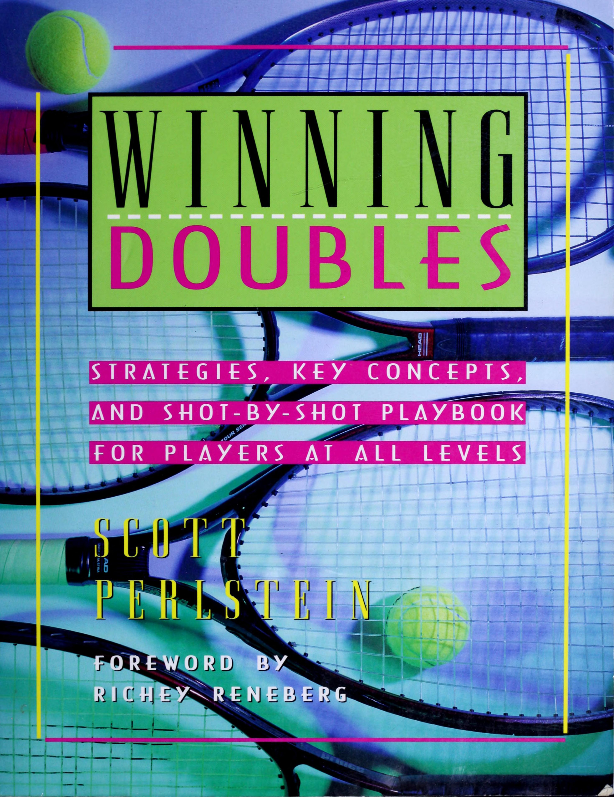
Bản dịch tiếng Việt hoàn chỉnh phục vụ cộng đồng quần vợt Việt Nam
Xuất bản điện tử chuẩn hóa — Tennis Unified Library
Dành tặng Karen, người vợ yêu quý của tôi, người đã luôn kiên nhẫn để tôi thỏa sức làm việc bên chiếc máy vi tính và viết nên cuốn sách này. Cảm ơn em vì tình yêu thương và sự ủng hộ vô bờ bến.
Tôi xin gửi lời cảm ơn chân thành và sâu sắc nhất tới Mark Jee, người bạn đánh đôi ăn ý suốt nhiều năm qua của tôi, người đã cùng tôi chia sẻ vô số giờ phút tập luyện và thi đấu đầy nhiệt huyết trên sân. Sự ăn ý và những trải nghiệm thực chiến cùng anh chính là nguồn cảm hứng trực tiếp để tôi hình thành nên cuốn sổ tay chiến thuật này.
Tôi cũng xin bày tỏ lòng biết ơn đặc biệt tới Richey Reneberg vì đã dành thời gian viết lời tựa tuyệt vời cho cuốn sách, cũng như toàn thể các học viên và đồng nghiệp đã luôn đồng hành, góp ý để công trình này được hoàn thiện một cách trọn vẹn nhất.
Tôi yêu đánh đôi. Tôi thực sự say mê thể thức thi đấu này. Tôi thích sự tương tác không ngừng với người đồng đội bên cạnh mình — cảm giác rằng vào những ngày tôi thi đấu chệch choạc, anh ấy có thể nâng đỡ và vực dậy tinh thần cho tôi, và vào những ngày khác, tôi có thể trở thành điểm tựa vững chắc để đưa anh ấy vượt qua khó khăn. Tôi yêu tốc độ mãnh liệt và nhịp độ dồn dập mà một trận đánh đôi mang lại, cũng như chiều sâu chiến thuật và những bước di chuyển đồng bộ như một vũ điệu được lập trình sẵn.
Tôi giành danh hiệu vô địch quốc gia đầu tiên ở nội dung đánh đôi khi mới 11 tuổi, và kể từ cột mốc ấy, tôi luôn đăng ký thi đấu đánh đôi trong mọi giải đấu mà mình tham dự. Việc học cách chơi đôi một cách bài bản đã biến tôi thành một tay vợt toàn diện và bản lĩnh hơn rất nhiều — đặc biệt là trong những năm tháng thi đấu tại trường đại học, nơi tôi có thể đóng góp tối đa điểm số cho toàn đội ở cả nội dung đánh đơn lẫn đánh đôi.
Kể từ năm 1987, tôi bắt đầu thi đấu chuyên nghiệp ở cả nội dung đơn và đôi trên hệ thống giải đấu ATP của Hiệp hội Quần vợt Nhà nghề. Dù tôi cũng gặt hái được những thành công đáng tự hào ở nội dung đơn, nhưng chính ở nội dung đánh đôi, có ba cột mốc vĩ đại đã định hình sự nghiệp của tôi.
Đầu tiên, vào năm 1992, tôi cùng người bạn đánh đôi Jim Grabb đã xuất sắc giành chức vô địch Grand Slam danh giá tại giải Mỹ Mở rộng (US Open). Đây là một chiến thắng có ý nghĩa vô cùng đặc biệt đối với chúng tôi, bởi chỉ hai tháng trước đó, chúng tôi vừa phải nếm trải thất bại cay đắng trong trận chung kết đôi nam Wimbledon lịch sử sau năm set đấu nghẹt thở với tỉ số set cuối lên tới 17-19. Được nâng cao chiếc cúp vô địch Grand Slam ngay trên mảnh đất quê hương thực sự là một cảm xúc không gì sánh được.
Cột mốc thứ hai đến vào năm 1993, khi tôi vinh dự giữ vị trí số 1 thế giới nội dung đánh đôi trên bảng xếp hạng máy tính ATP trong suốt 12 tuần liên tiếp. Dù bản thân tôi khi đó không cảm thấy mình có gì khác biệt so với thường ngày, nhưng đúng như một người bạn thân đã nhắc nhở tôi: trở thành người đứng đầu thế giới trong bất kỳ lĩnh vực nào cũng là một thành tựu phi thường mà chỉ một số rất ít người trong lịch sử có diễm phúc chạm tới. Và cuối cùng, điều mà tôi luôn coi là niềm tự hào lớn nhất trong sự nghiệp đánh đôi của mình: trong hai năm 1993 và 1994, tôi đã vinh dự được khoác áo đội tuyển quốc gia Hoa Kỳ tham dự Davis Cup với tư cách thành viên chủ lực của đội tuyển đánh đôi.
Tôi biết đến Scott Perlstein thông qua sự giới thiệu của một người bạn chung và đã quen biết anh ấy hơn sáu năm nay. Tôi đã từng trực tiếp đứng chung trên sân tập với Scott và tận mắt chứng kiến phương pháp huấn luyện của anh. Khả năng nhìn nhận toàn cảnh bức tranh chiến thuật, sau đó bóc tách nó thành từng mảnh ghép nhỏ gọn, dễ hiểu và hoàn toàn có thể thực hiện được của Scott là một trong những tài năng sư phạm xuất sắc nhất mà tôi từng được thấy trong làng quần vợt.
Trong cuốn sách Chiến Thuật Đánh Đôi Đỉnh Cao (Winning Doubles), Scott đã giải quyết thấu đáo những chìa khóa cốt lõi nhất để trở thành một người đồng đội mẫu mực: học cách phối hợp ăn ý như một khối thống nhất và không ngừng tiến bộ cùng nhau. Quan trọng hơn cả, anh mang đến cho bạn một cuốn Sổ tay thực chiến (Playbook) vô cùng mạch lạc và trực quan. Nếu bạn kiên trì nghiên cứu và áp dụng nó vào từng buổi tập, cuốn sách này sẽ giúp bạn hiểu rõ từng nước biến mà bạn phải tạo ra và tuân thủ để gặt hái được thành công rực rỡ mà đội của bạn hằng khao khát.
Cựu Tay Vợt Số 1 Thế Giới Đánh Đôi ATP
Thứ Hai, ngày 6 tháng 7 năm 1992. Bối cảnh: Câu lạc bộ Toàn Anh (All England Club). Giải đấu: Wimbledon — giải quần vợt lâu đời và danh giá bậc nhất trong trái tim của mọi tín đồ banh nỉ trên toàn thế giới. Đáng lẽ giải đấu đã phải hạ màn từ ngày Chủ nhật hôm trước. Nhưng bởi một trận chung kết đôi nam dài kỷ lục và kịch tính đến nghẹt thở giữa cặp đôi huyền thoại John McEnroe / Michael Stich đối đầu với Jim Grabb / Richey Reneberg, giải đấu đã buộc phải kéo dài thêm một ngày.
Không chỉ trận đấu phải dời sang ngày hôm sau để tiếp tục phân định thắng bại, mà ban tổ chức giải còn quyết định mở cửa miễn phí cho người hâm mộ vào sân để chứng kiến hồi kết. Đây thực sự là "món hời thế kỷ" đối với giới mộ điệu quần vợt, bởi ai cũng biết vé xem chung kết Wimbledon là tấm vé khó tìm nhất trong toàn bộ hệ thống Grand Slam.
Bốn tay vợt đã chiến đấu đến cùng để kết thúc trận đấu vào tối Chủ nhật, nhưng không bên nào có thể tạo được khoảng cách cách biệt hai game cần thiết để giành chiến thắng trong set quyết định. Cuối cùng, khi bóng tối phủ kín London, trận đấu buộc phải tạm dừng. Trời tối đến mức các tay vợt gần như không còn nhìn thấy bóng, và các bình luận viên truyền hình lo ngại rằng ánh sáng từ đèn máy quay không còn đủ để khán giả màn ảnh nhỏ theo dõi diễn biến. Tỉ số lúc đó đang hòa 2-2 sau bốn set đấu: Grabb và Reneberg thắng set 1 và set 3 với tỉ số 7-5 và 6-3; trong khi McEnroe và Stich san bằng cách biệt bằng hai loạt tie-break ở set 2 và set 4. Khi set 5 bước vào tỉ số nghẹt thở 13 đều, các tay vợt đã gặp nhau tại lưới và trọng tài trưởng giải đấu Andy Mills được mời vào sân để quyết định hoãn trận đấu sang ngày hôm sau.
Vào ngày thứ Hai, John McEnroe và Michael Stich cuối cùng đã vượt lên để giành chiến thắng với tỉ số không tưởng 19-17 ở set thứ năm — khép lại trận chung kết đôi dài nhất trong lịch sử Wimbledon. Trận đấu kéo dài hơn 5 giờ đồng hồ tranh tài thực tế, chưa kể trọn vẹn một ngày thi đấu dở dang. Thật đáng kinh ngạc, trận đấu nổi tiếng này vẫn chưa phải là trận đánh đôi dài nhất trong lịch sử quần vợt chuyên nghiệp. Kỷ lục vô tiền khoáng hậu thuộc về trận tứ kết giải U.S. Indoor Championships vào tháng 2 năm 1968 tại Salisbury, Maryland: Mark Cox và Bobby Wilson đã đánh bại Charlie Pasarell và Ron Homberg với các tỉ số 26-24, 17-19, 30-28; tổng cộng 144 game đấu đã diễn ra trong suốt 6 giờ 23 phút!
Tất nhiên, đánh đôi không phải lúc nào cũng là một cuộc marathon kéo dài cả ngày như vậy. Trận đánh đôi ngắn nhất lịch sử diễn ra vào ngày 13 tháng 7 năm 1914 trong trận chung kết nam Kent Championships tại Beckham, khi Norman Brooks và Tony Wilding đè bẹp Arthur Gore và Herbert Roper Barrett với tỉ số 6-2, 6-1 chỉ sau vỏn vẹn 16 phút thi đấu. Trận đấu này diễn ra từ thời điểm luật quần vợt còn chưa quy định 20 giây nghỉ giữa các pha bóng và 90 giây nghỉ đổi sân sau mỗi game lẻ.
Dù bạn là một vận động viên chuyên nghiệp đang thi đấu trên những mặt sân cỏ linh thiêng của Wimbledon hay một người chơi phong trào đang tận hưởng niềm vui trên những sân đất nện Har-tru tại công viên, đánh đôi luôn là một trong những cách tuyệt vời nhất để tìm kiếm niềm vui, rèn luyện thể lực và kết nối tình bạn bè.
Hàng năm, tôi đều đến tham dự giải quần vợt Newsweek Championships tại Palm Springs. Trước khi thể thức được điều chỉnh vào năm 1994, khán giả thường bắt đầu ra về vào khoảng 4 giờ chiều — đúng thời điểm các trận đánh đôi đỉnh cao bắt đầu khởi tranh. Đến 6 giờ tối, khán đài sân vận động gần như trống vắng. Điều này lại là một cơ hội tuyệt vời cho vợ chồng tôi và những người bạn đồng hành Rosenstock, bởi chúng tôi có thể di chuyển xuống tận hàng ghế sát đường biên sân đấu để thưởng thức trọn vẹn các pha bóng. Đến 7 giờ tối, sân vận động trông chẳng khác nào một buổi họp mặt gia đình! Như bình luận viên thể thao Al Michaels từng hóm hỉnh nhận xét: "Thay vì công bố số lượng khán giả mua vé, sẽ dễ dàng hơn nhiều nếu tôi chỉ cần đọc tên từng người đang ngồi ở đây."
Chúng tôi không bao giờ rời đi cho đến khi trái bóng cuối cùng được đánh chạm đất, bởi chất lượng kỹ thuật và tốc độ của những cú đánh đôi chuyên nghiệp là phi thường đến mức khó tin. Khi được ngồi gần các tay vợt đến vậy, trong một không gian tĩnh lặng không có sự ồn ào của đám đông, bạn thực sự có cảm giác như chính mình đang hòa mình vào từng đường bóng. Theo đánh giá của tôi, đánh đôi chính là phần hấp dẫn và tinh túy nhất của một giải đấu quần vợt. Việc đại đa số khán giả bỏ về và bỏ lỡ các trận đánh đôi luôn là một điều bí ẩn đối với tôi. Theo dõi các trận đánh đôi đỉnh cao không chỉ mang tính giáo khoa sâu sắc, truyền cảm hứng mạnh mẽ, mà còn vô cùng kịch tính và ngoạn mục.
Tôi dạy quần vợt sáu ngày một tuần, đôi khi kéo dài 10 tiếng mỗi ngày. Động lực lớn nhất thúc đẩy tôi làm việc chính là sự cống hiến không ngừng cho sự tiến bộ. Tôi buộc phải luôn cập nhật kiến thức hiện đại và liên tục hoàn thiện lối chơi của mình. Điều đó mang lại cho tôi một lợi thế nghề nghiệp rất lớn so với nhiều huấn luyện viên khác. Hàng năm, tôi luôn dành thời gian tạm gác công việc giảng dạy để tham dự ít nhất ba giải đấu chuyên nghiệp lớn, và các trận đánh đôi luôn là nơi tôi tìm thấy nhiều bài học quý giá nhất. Tôi cũng liên tục tham gia thi đấu các giải đấu cùng người bạn đánh đôi suốt bốn năm qua của mình là Mark Jee. Cả hai chúng tôi đều say mê bầu không khí cạnh tranh lành mạnh và tình bằng hữu trên sân, và chưa bao giờ chúng tôi tìm thấy nhiều niềm vui với cây vợt như thế. Sự kết hợp giữa việc quan sát các đấu thủ hàng đầu và trực tiếp trải nghiệm thi đấu thực tế giúp tôi không chỉ bắt kịp nhịp thở của quần vợt hiện đại mà còn duy trì ngọn lửa nhiệt huyết bất tận cho bộ môn này — ngọn lửa sau đó được tôi truyền lại trọn vẹn cho từng học viên của mình.
Quần vợt đánh đôi đòi hỏi tinh thần đồng đội chặt chẽ và phản xạ hành động cực kỳ mau lẹ. Tuy nhiên, trong thực tế, rất nhiều khi bốn người chơi bước vào sân và bắt đầu thi đấu mà không thực sự hiểu đánh đôi đúng nghĩa phải được vận hành như thế nào. Đó chính là lý do tôi quyết định chấp bút viết nên cuốn sách này. Mục đích tối thượng của nó là giúp bạn đọc trở thành một tay vợt đánh đôi xuất sắc và thông thái hơn. Cuốn sách này được thiết kế để phục vụ mọi trình độ chơi: dù bạn là người mới làm quen với bộ môn hay là một tay vợt kỳ cựu đang chinh chiến tại các giải đấu phong trào và bán chuyên nghiệp, lối chơi của bạn chắc chắn sẽ được nâng lên một tầm cao hoàn toàn mới một khi bạn thấu hiểu và làm chủ các bài học trong cuốn sách này.
Tôi sẽ phân tích cặn kẽ các loại hình đánh đôi, cách chọn vị trí đứng, chiến lược di chuyển đồng bộ, cũng như cách để bạn và đồng đội hỗ trợ lẫn nhau tối đa. Tôi cũng đi sâu vào các vấn đề tâm lý và xung đột thường phát sinh trên sân giữa các đối thủ cũng như giữa hai người bạn cùng đội, đồng thời chỉ ra phương pháp xử lý êm đẹp và hiệu quả nhất.
Và yếu tố quan trọng bậc nhất, linh hồn của cuốn sách này chính là Sổ Tay Chiến Thuật Bằng Hình Ảnh (Picture Playbook). Nếu bạn từng chơi bóng bầu dục hay bóng rổ, bạn sẽ biết các vận động viên luôn có một cuốn sổ tay chiến thuật (playbook) để nghiên cứu các bài chạy và sơ đồ phối hợp. Tôi đã kỳ công xây dựng 64 kịch bản nước biến (64 Plays) thường xuyên xuất hiện nhất trên sân đôi, chỉ rõ cho cả hai bên cách di chuyển và phản ứng chuẩn xác nhất trước từng tình huống bóng.
Đối với mỗi kịch bản, bạn sẽ được hướng dẫn chi tiết: nên tung ra cú đánh nào, đặt bóng vào vị trí nào trên sân đối phương, và bạn cùng người đồng đội phải lập tức di chuyển đến đâu để đón đường đánh trả tiếp theo. Đi kèm với mỗi nước biến là hệ thống ảnh chụp hiện trường trực quan để đội của bạn dễ dàng hình dung và ghi nhớ diễn biến. Tôi thường ví việc học các nước biến chiến thuật này giống như việc nạp một chiếc đĩa mềm vào máy vi tính. Sẽ mất một chút thời gian ban đầu để cài đặt chương trình và làm quen với phần mềm. Nhưng một khi chương trình đã được nạp hoàn chỉnh vào bộ nhớ tiềm thức, mỗi khi bước vào sân, bạn chỉ việc "bật máy lên" và hệ thống sẽ tự động vận hành một cách mượt mà và chính xác.
Chìa khóa của mọi sự tiến bộ là phải có một mục tiêu rõ ràng và nắm vững từng mắt xích cần chinh phục để đạt được mục tiêu đó. Bằng cách hiểu rõ điều gì sắp sửa diễn ra trên sân và chuẩn bị sẵn phương án đối phó, cả bạn và người đồng đội sẽ gặt hái được những chiến thắng vang dội trong một khoảng thời gian ngắn hơn rất nhiều.
Bốn người chơi, Bức tường trên lưới và nguyên tắc phân chia trách nhiệm sân đấu
Đại đa số những người chơi quần vợt phong trào và không chuyên đều dành phần lớn thời gian thi đấu nội dung đánh đôi, đơn giản bởi thể thức này cho phép nhiều người cùng tham gia trên một sân đấu tại một thời điểm. Đây là một yếu tố kinh tế và thực tiễn vô cùng quan trọng khi bạn phải trả chi phí thuê sân theo giờ hoặc khi số lượng sân quần vợt tại câu lạc bộ có hạn. Hầu hết các giải đấu câu lạc bộ dành cho người lớn đều tổ chức nội dung đánh đôi, và hàng triệu người trên khắp thế giới tìm thấy niềm say mê bất tận từ thể thức này.
Tuy nhiên, rất nhiều tay vợt bước vào sân đôi với tư duy của một trận đánh đơn được nhân đôi lên. Họ chạy theo bóng một cách bản năng, dẫm chân lên nhau, tranh giành bóng của đồng đội, hoặc ngược lại — bỏ mặc những khoảng trống chết người ở giữa sân vì nghĩ rằng người kia sẽ đỡ. Để trở thành một đội đánh đôi chiến thắng, điều đầu tiên bạn và đồng đội phải làm chủ chính là những khái niệm và quy ước cơ bản nhất của sân đôi.
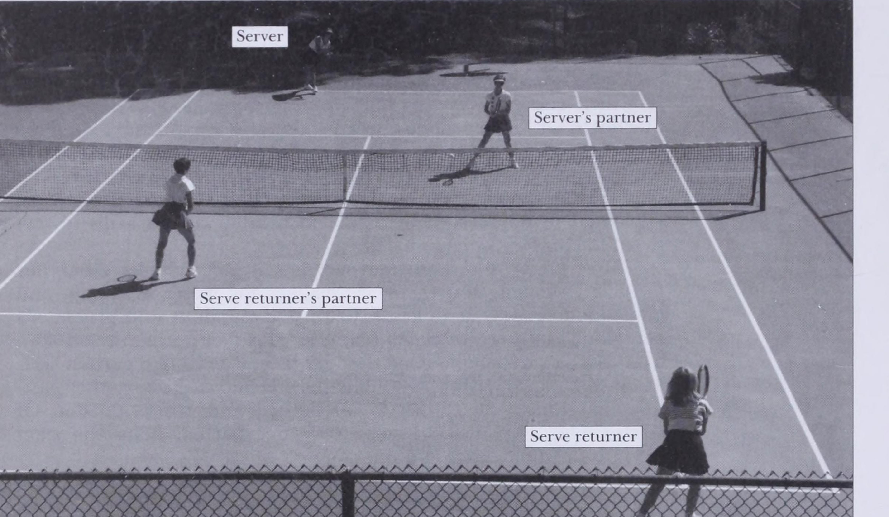
Hình 1.1: Sơ đồ bốn vị trí cơ bản ban đầu trên sân đánh đôi: Người giao bóng (A), Đồng đội người giao bóng (B), Người trả giao bóng (C), và Đồng đội người trả giao bóng (D).
Để tiện theo dõi và phân tích chiến thuật xuyên suốt cuốn sách này, chúng ta quy ước bốn vị trí của bốn người chơi trên sân đôi như sau:
Một trong những sai lầm phổ biến nhất của các cặp đôi mới chơi là phân chia sân theo chiều dọc: một người chịu trách nhiệm toàn bộ bóng phía trên lưới và người kia chịu trách nhiệm toàn bộ bóng cuối sân. Đây là một thảm họa chiến thuật! Trong đánh đôi hiện đại, trách nhiệm cơ bản của hai người chơi được phân chia theo Trái và Phải: một người chịu trách nhiệm nửa sân bên phải, người kia chịu trách nhiệm nửa sân bên trái.
Tất nhiên, trong quá trình diễn ra pha bóng, sẽ có những tình huống bắt lưới (poach) hoặc đổi cánh khẩn cấp khi bị lốp bóng, khiến hai người hoán đổi vị trí tạm thời. Nhưng ngay khi pha bóng kết thúc hoặc khi thế trận được tái lập, mỗi người phải ý thức rõ ràng về nửa sân phụ trách của mình.
Trong quần vợt đánh đôi, đội nào kiểm soát được lưới trước sẽ nắm giữ hơn 70% cơ hội chiến thắng điểm số. Khi cả bạn và đồng đội cùng tiến lên chiếm lĩnh lưới và đứng song song ở Vạch 3/4, hai bạn đã dựng nên một Bức Tường (The Wall) kiên cố trước mặt đối thủ.
Đối phương nhìn sang sẽ thấy toàn bộ góc đánh thuận lợi bị bịt kín. Họ chỉ còn hai lựa chọn cực kỳ rủi ro: hoặc cố đánh bóng cực mạnh qua một khe hẹp hòi, hoặc phải tung ra một cú lốp bóng hoàn hảo qua đầu hai bạn. Hãy biến việc lập "Bức tường trên lưới" thành mục tiêu số một trong mọi pha bóng giao và trả giao bóng của đội bạn!
Trước khi bước vào một trận đấu chính thức, bạn và người đồng đội tuyệt đối không được để các vấn đề sau xảy ra một cách ngẫu hứng:
Nhiệm vụ, tâm lý và vị trí của Người Giao Bóng, Người Đứng Lưới, Người Trả Giao và Đồng Đội
Mỗi vị trí trong bốn vị trí A, B, C, D đều mang trong mình những trọng trách chiến thuật riêng biệt và đòi hỏi một trạng thái tâm lý hoàn toàn khác nhau. Một tay vợt đánh đôi giỏi là người không chỉ xuất sắc ở vị trí sở trường của mình mà còn thấu hiểu sâu sắc người đồng đội và đối thủ đang phải đối mặt với điều gì ở vị trí của họ.
Nhiệm vụ tối thượng của Người A là đưa được quả giao bóng 1 vào sân. Trong đánh đôi, quả giao bóng 2 yếu ớt là "lời mời gọi tử thần" đối với người trả giao bóng của đối phương. Một quả giao bóng 1 với tốc độ vừa phải (khoảng 75-80% lực tối đa) nhưng có độ xoáy và vị trí hiểm hóc sẽ mang lại hiệu quả cao gấp mười lần một cú giao bóng sấm sét nhưng thường xuyên hỏng.
Ngay sau khi chạm bóng, Người A phải lập tức di chuyển tiến lên phía trước để lao lên lưới (Serve and Volley). Quán tính của động tác tung bóng về phía trước sẽ giúp bạn nhanh chóng bước chân qua vạch baseline. Mục tiêu của Người A là chạm được tới vạch giao bóng để tung ra cú First Volley (Cú volley đầu tiên) đánh chéo sân sâu vào chân đối thủ, sau đó bước thêm 3 bước để hợp cùng Người B lập thành Bức Tường trên lưới.
Người B là "ông chủ" của khu vực lưới. Đứng tại Vạch 3/4, Người B không được phép đứng yên như một pho tượng. Bạn phải liên tục nhún nhảy, chuyển động và đe dọa người trả giao bóng đối phương. Bất cứ khi nào Người A tung ra một quả giao bóng tốt khiến Người C phải với tay hoặc đánh bóng với tư thế mất thăng bằng, Người B phải lập tức lao chéo sang để Bắt Lưới (Poach) và kết liễu điểm số.
Bắt lưới thật: Đừng bao giờ di chuyển quá sớm trước khi đối thủ chạm bóng. Thời điểm vàng để Người B bắt đầu bứt tốc là ngay khoảnh khắc trái bóng chạm đất bên sân đối phương và đầu của Người C cúi xuống để vào bộ đánh bóng. Lúc đó, đối thủ đã cố định góc nhìn và không thể thay đổi hướng đánh được nữa.
Giả bắt lưới: Nếu đối thủ bắt đầu quen với việc bạn hay bắt lưới, hãy dùng đòn giả vờ: nhử một bước nhanh về phía trung lộ khi bóng bay qua lưới, rồi ngay lập tức đạp chân quay trở lại bảo vệ hành lang dọc dây của mình. Đối thủ thấy bạn nhấp nhổm sẽ hoảng sợ đánh bóng dọc dây và rơi thẳng vào chiếc bẫy đang đợi sẵn của bạn!
Người trả giao bóng phải đối mặt với áp lực tâm lý nặng nề nhất trên sân. Bạn vừa phải đón một quả bóng bay với tốc độ cao, vừa phải dè chừng người đứng lưới đối phương sẵn sàng vồ bóng. Mục tiêu hàng đầu của Người C là đưa bóng qua lưới an toàn và ép bóng đi thấp dưới tầm lưới.
Có ba mục tiêu vàng cho cú trả giao bóng của Người C:
Đứng tại Vạch 3/4, nhiệm vụ của Người D là quan sát chất lượng cú trả giao bóng của đồng đội mình (Người C):
Giao tiếp tích cực, xây dựng niềm tin, ám hiệu tay và đồng hồ di chuyển chiến thuật
Dù bạn và người bạn cùng đội đều là những tay vợt có kỹ thuật cá nhân rất xuất sắc, điều đó không hề đảm bảo rằng hai bạn sẽ tạo nên một đội đánh đôi chiến thắng. Có những cặp đôi thi đấu đơn rất bình thường nhưng khi kết hợp lại trở thành một cỗ máy bất khả chiến bại; ngược lại, có những cặp đôi quy tụ hai ngôi sao sáng chói nhưng khi đứng cạnh nhau lại thi đấu rời rạc và liên tục thất bại. Bí quyết nằm ở sự ăn ý và tinh thần đồng đội.
Nếu bạn theo dõi bất kỳ trận đánh đôi chuyên nghiệp nào tại các giải Grand Slam, bạn sẽ thấy sau mỗi điểm số kết thúc, hai tay vợt luôn bước lại gần nhau, che miệng sau chiếc vợt và thì thầm trao đổi trong vài giây. Tôi gọi đây là "Hội ý công thức" (Formula Huddle).
Bạn chỉ có 20 giây giữa các điểm số theo luật thi đấu. Hãy tận dụng 5 giây quý giá để bước lại gần nhau và chốt kế hoạch cho quả tiếp theo:
Hai người chơi trên sân đôi phải di chuyển như thể được nối với nhau bằng một sợi dây thừng vô hình dài khoảng 8 mét. Khi một người bị kéo lệch sang góc sân bên phải để cứu một đường bóng ngắn, người kia không được đứng chôn chân tại chỗ mà phải lập tức di chuyển trượt theo chiều kim đồng hồ để bịt kín khoảng trống trung lộ vừa lộ ra. Đó chính là sự đồng bộ hoàn hảo của chiếc Đồng Hồ Di Chuyển.
Kiểm soát trung lộ, cú đánh góc ngắn đánh gục đối thủ và cú lốp bóng giải tỏa
Khi các tay vợt đạt đến trình độ từ 3.5 trở lên theo thang đánh giá USTA NTRP — tức là đã có khả năng đánh bóng qua lại ổn định và bắt đầu biết chơi lưới chủ động — trận đấu đánh đôi không còn là cuộc đọ sức về sức mạnh cơ bắp đơn thuần nữa, mà trở thành một ván cờ chiến thuật cân não. Đội nào kiểm soát được không gian và thời gian trên sân tốt hơn sẽ là đội giành chiến thắng chung cuộc.
Trong kho tàng chiến thuật đánh đôi, có ba vũ khí tối thượng mà bất kỳ tay vợt nào cũng phải thuần thục đến mức trở thành phản xạ vô điều kiện:
Người xưa có câu: "Đánh vào giữa giải quyết mọi bế tắc" (Down the middle solves the riddle). Đây là chân lý vĩ đại nhất của quần vợt đánh đôi. Khi bạn tung một cú đánh căng vào chính giữa sân đối phương, điều gì sẽ xảy ra?
Trái ngược với cú đánh trung lộ, cú đánh góc ngắn là một đòn kết liễu tinh tế. Bằng cách mở mặt vợt nghiêng khoảng 60 độ so với cổ tay khi tiếp xúc bóng, bạn tạo ra một đường bóng xoáy vuốt ngang, kéo trái bóng rơi ngay sát vạch biên đơn và văng ra ngoài sân đấu.
Cú đánh này cực kỳ hiệu quả khi đối thủ đang ở sâu sau vạch đáy sân hoặc khi hai bạn muốn kéo đối thủ ra khỏi vị trí bảo vệ trung lộ, mở toang toàn bộ sân trống cho người đồng đội đứng lưới của bạn tung đòn kết liễu ở nhịp bóng tiếp theo.
Nhiều tay vợt xem cú lốp bóng như một giải pháp tuyệt vọng chỉ dùng khi bị dồn vào chân tường. Đó là một quan niệm hoàn toàn sai lầm! Cú lốp bóng chiến thuật được tính toán kỹ lưỡng là một trong những vũ khí tấn công đáng sợ nhất trong đánh đôi.
Khi cả hai đối thủ đều đã dâng cao áp sát lưới và tự tin rằng họ đã kiểm soát được tình hình, một cú lốp bóng topspin cuộn bổng qua đầu đối phương sẽ ngay lập tức xoay chuyển hoàn toàn cục diện: hai đối thủ bị buộc phải quay lưng hớt hải chạy về vạch đáy sân để cứu bóng trong thế bị động, trong khi đội của bạn lập tức từ thế phòng ngự vươn lên chiếm trọn khu vực lưới để định đoạt điểm số!
Hướng dẫn tra cứu, 4 hình mẫu kỹ thuật và 64 nước biến chiến thuật từng cú đánh
Trong một trận bóng bầu dục đỉnh cao, nếu bạn quan sát các cầu thủ bên ngoài đường biên, bạn sẽ thường xuyên thấy họ chăm chú nghiên cứu những bức ảnh chụp lại thế trận vừa diễn ra từ trên khán đài của ban huấn luyện gửi xuống. Các cầu thủ nghiên cứu những nước biến đó để hiểu rõ hơn cách đối phó và phản ứng chuẩn xác nhất trước từng tình huống tương tự trên sân. Tôi đã kỳ công xây dựng một công cụ hoàn toàn tương tự dành riêng cho bạn: Sổ Tay Thực Chiến Quần Vợt Đánh Đôi (The Doubles Playbook).
Mỗi kịch bản thực chiến được mở đầu bằng một tình huống in đậm mô tả pha bóng khởi đầu. Đi kèm với đó là các chỉ dẫn chi tiết giải thích cách thức phản ứng tối ưu của cả bốn người chơi trên sân: Người A, Người B, Người C và Người D. Trong một số tình huống tấn công thuận lợi, bạn sẽ được hướng dẫn cách gia tăng sức ép và dứt điểm giành điểm thắng; ở những tình huống bị động khác, bạn sẽ được nhắc nhở nên tiết chế lực đánh, chọn giải pháp an toàn để giữ bóng trong sân và duy trì cơ hội trong điểm số.
Biết rõ nên tung ra cú đánh nào và đặt bóng vào đâu sẽ làm gia tăng đáng kể cơ hội chiến thắng của đội bạn, bởi vì khi đó bạn sẽ luôn chủ động ngắm trúng mục tiêu và vung vợt theo đà một cách tự tin, thay vì đánh bóng trong hoang mang và bị động.
Trước khi đi vào nghiên cứu chi tiết 64 nước biến, bạn cần nắm vững bốn hình mẫu kỹ thuật tiếp xúc bóng cơ bản được minh họa dưới đây:
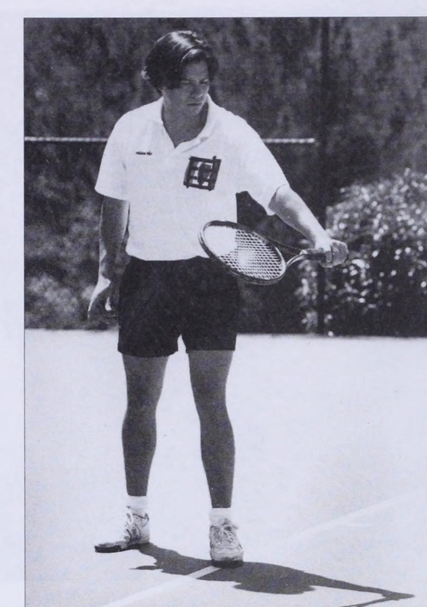
Hình 1: Mặt vợt hơi mở tại điểm tiếp xúc bóng phía trước thân người để tạo độ xoáy cắt (Slice / Underspin), giúp đường bóng đi là mặt lưới và cắm sâu xuống chân đối phương.
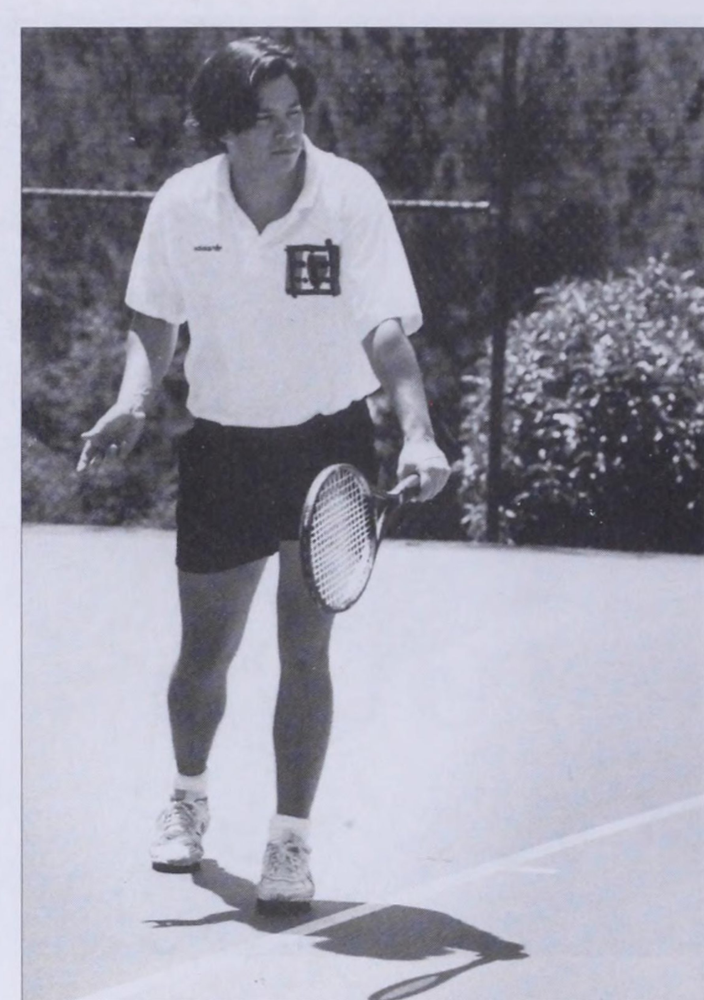
Hình 2: Mặt vợt vuông góc tại điểm tiếp xúc bóng, kết hợp đà vuốt vợt từ dưới lên trên để tạo xoáy cuộn (Topspin), giúp cú đánh bóng nảy vồng hiểm hóc hoặc cắm nhanh qua lưới.
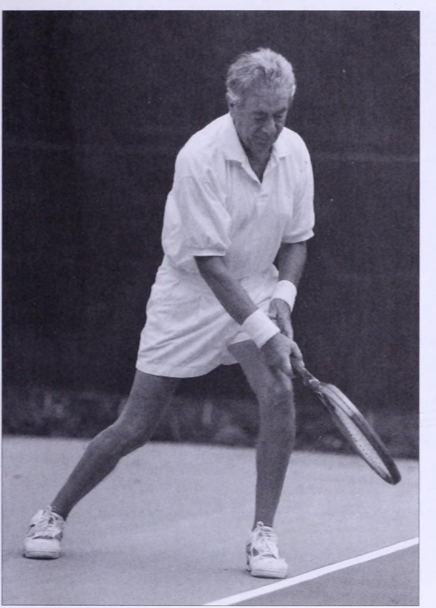
Hình 3: Tư thế bắt volley chuẩn xác: thân người hơi nghiêng về phía trước, cổ tay khóa chặt, mặt vợt đón bóng phía trước tầm mắt để triệt tiêu lực và điều hướng bóng.
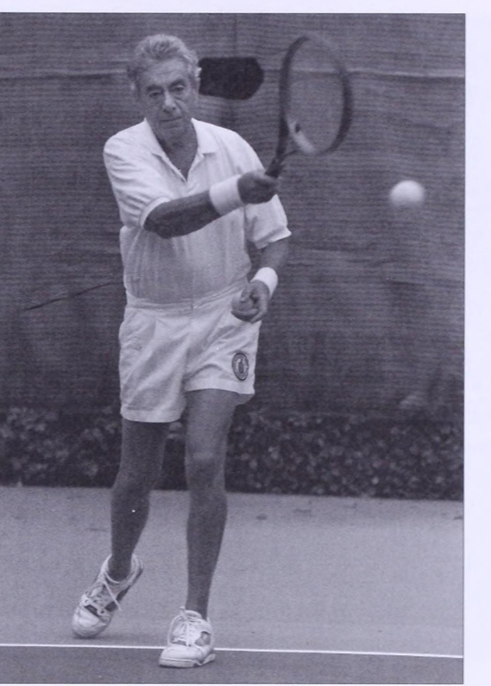
Hình 4: Tư thế chuẩn bị đập smash: vai xoay nghiêng hoàn toàn, tay không cầm vợt chỉ thẳng lên hướng bóng rơi, tiếp xúc bóng tại điểm cao nhất để kết liễu điểm số.
Người A giao bóng và lao lên lưới bắt volley. Người C tung cú trả giao bóng bạt chéo sân uy lực và cũng lập tức lao lên chiếm lưới.
Người A giao bóng rồi bứt tốc lên lưới, cố gắng chạm tới vạch phát bóng để thực hiện cú volley đầu tiên (First Volley) đánh chéo sân trở lại. Sau khi chạm bóng, Người A tiến thêm gần 1 mét (3 feet) để cùng Người B lập thành Bức Tường chắn lưới kiên cố.
Người B giữ vững vị trí tại Vạch 3/4 bên phần sân của mình, sẵn sàng đón bắt mọi đường bóng đi chệch vào trung lộ.
Người C sau cú trả giao bóng chéo sân uy lực lập tức lao nhanh lên lưới. Lý tưởng nhất là cô thực hiện cú volley đầu tiên từ bên trong vạch phát bóng. Cô có thể đánh bóng về bất kỳ hướng nào vì cả bốn người chơi lúc này đều đã có mặt trên lưới. Sau cú đánh, cô tiến lên sát lưới cùng đồng đội.
Người D giữ nguyên vị trí nếu đã xuất phát sẵn từ Vạch 3/4 để hỗ trợ phòng ngự và đón đầu các pha bóng bạt.
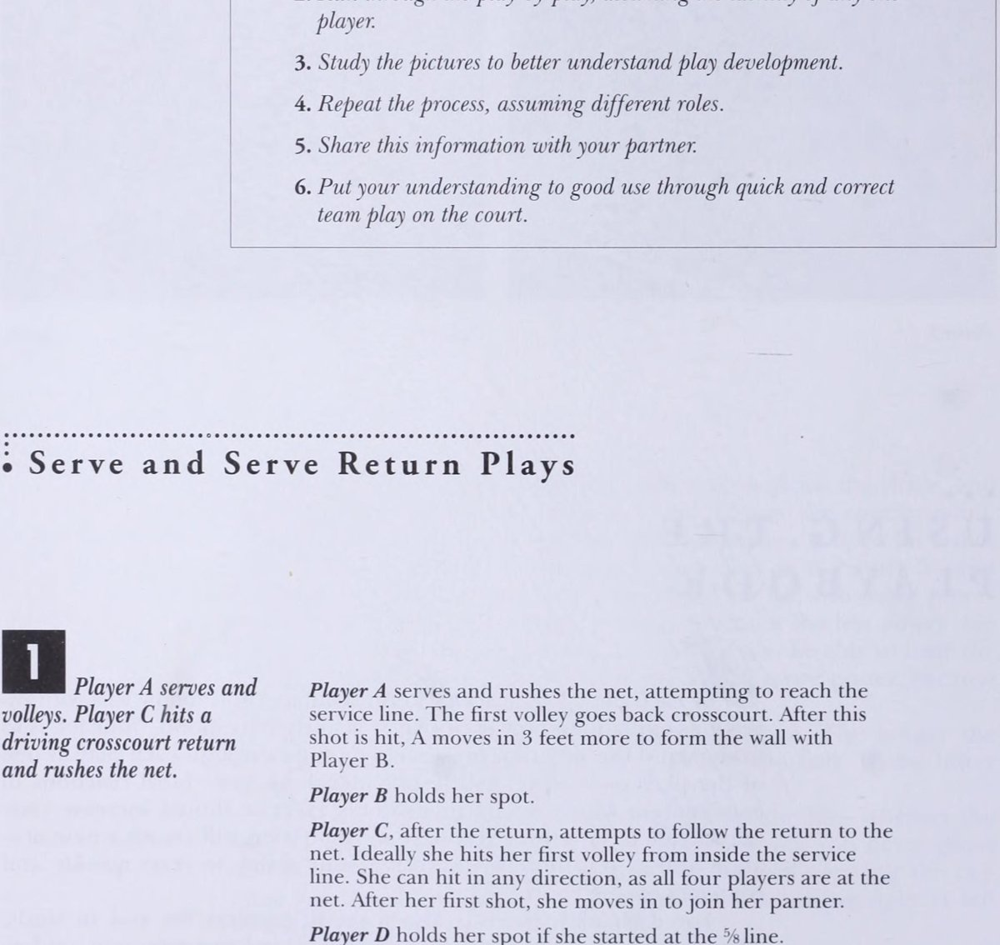
Giai đoạn 1: Người A giao bóng và di chuyển về phía trước, chuẩn bị vào bộ bắt cú volley đầu tiên.
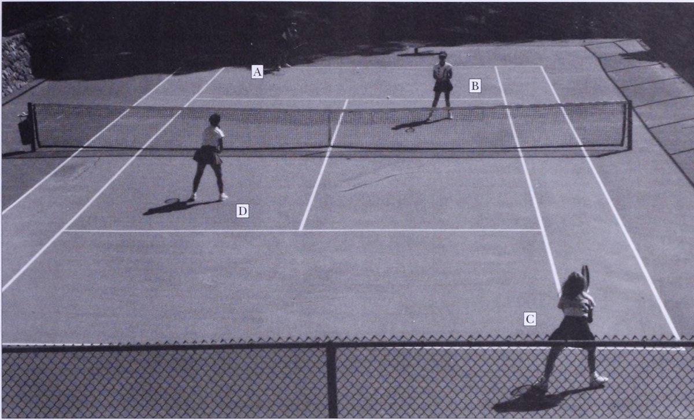
Giai đoạn 2: Người C lao lên lưới ngay sau cú trả bóng, cả hai đội hình thành thế trận bốn người trên lưới.
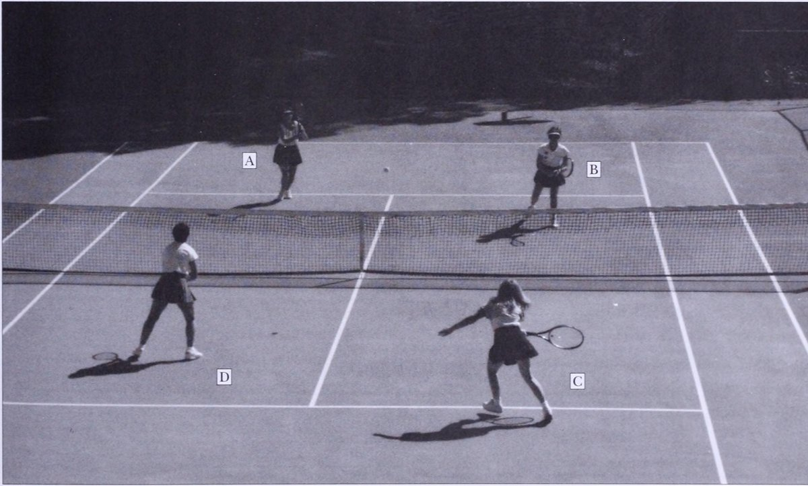
Giai đoạn 3: Người A và Người B cùng tiến sát lưới, khóa chặt mọi góc đánh hiểm của đối thủ.
Người A giao bóng và lao lên lưới. Người C tung cú trả bóng bạt chéo sân nhưng quyết định ở lại cuối sân.
Người A nỗ lực tiếp cận vạch phát bóng để bắt cú volley đầu tiên đưa bóng trở lại chéo sân sâu. Sau cú chạm vợt này, Người A tiến thêm 1 mét để cùng Người B hợp thành Bức Tường chắn lưới.
Người B giữ vững vị trí tại Vạch 3/4, liên tục gây sức ép thị giác lên Người C.
Người C nhún chân lùi lại sau vạch đáy sân để sẵn sàng đón cú volley của Người A. Anh đang phải đối mặt với Bức Tường của hai người trên lưới và buộc phải tìm đường thoát hiểm: hoặc đánh cực mạnh dọc dây, đánh cực căng vào trung lộ, gạt góc ngắn chéo sân, hoặc tung cú lốp bóng giải tỏa.
Người D giữ nguyên vị trí tại Vạch 3/4 bên phần sân của mình.
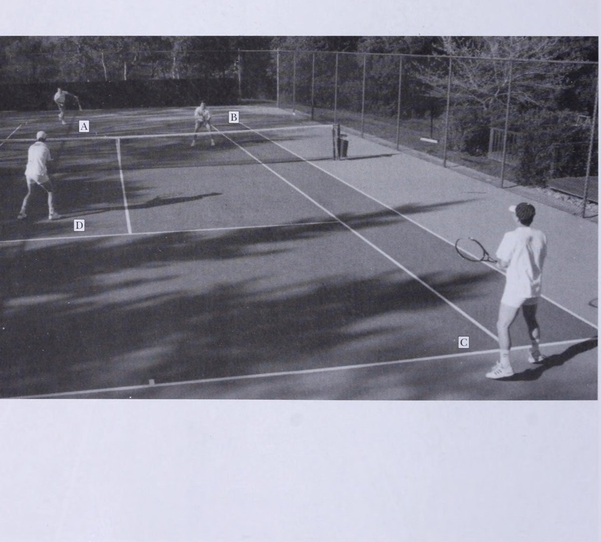
Giai đoạn 1: Người A tiếp cận vạch giao bóng và bắt cú volley đầu tiên chéo sân.
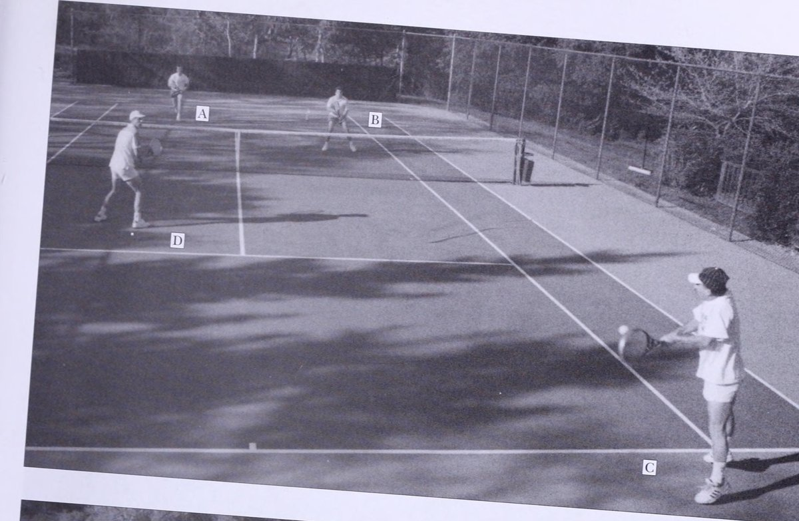
Giai đoạn 2: Người C lùi sâu sau vạch đáy sân trong thế bị Bức Tường của đội giao bóng dồn ép.
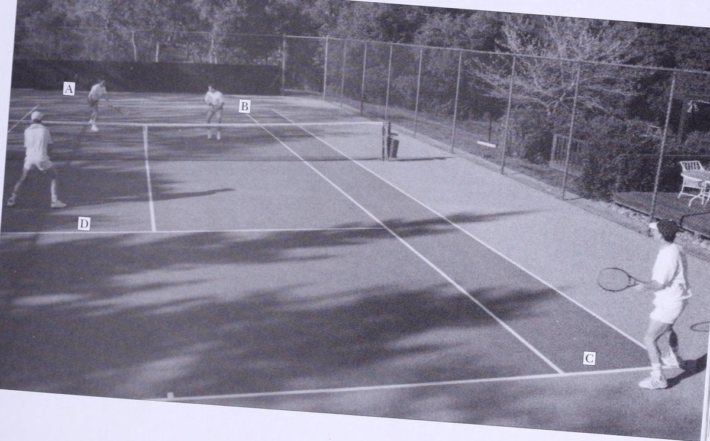
Giai đoạn 3: Người A và Người B chiếm lĩnh hoàn toàn khu vực lưới, khóa chặt mọi đường bóng.
Người A giao bóng và chọn ở lại cuối sân. Người C sau cú trả giao bóng quyết định dâng cao chiếm lưới.
Người A nhún nhảy sau vạch đáy sân để chuẩn bị đón đường trả bóng của Người C. Lúc này Người A rơi vào thế đối mặt với Bức Tường lưới của đối phương và buộc phải tìm đường thoát hiểm: đánh bóng căng dọc dây, xuyên trung lộ, gạt góc ngắn hoặc lốp bóng bổng.
Người B giữ nguyên vị trí, tập trung cao độ và sẵn sàng phản xạ đón các đường bóng bay ngang tầm ngực.
Người C lao lên lưới với quyết tâm chiếm lĩnh vị trí tại Vạch 3/4 để hợp cùng Người D tạo thế tấn công gọng kìm.
Người D giữ nguyên vị trí lưới, sẵn sàng vồ bóng nếu Người A đánh hỏng hoặc bóng bay bổng.
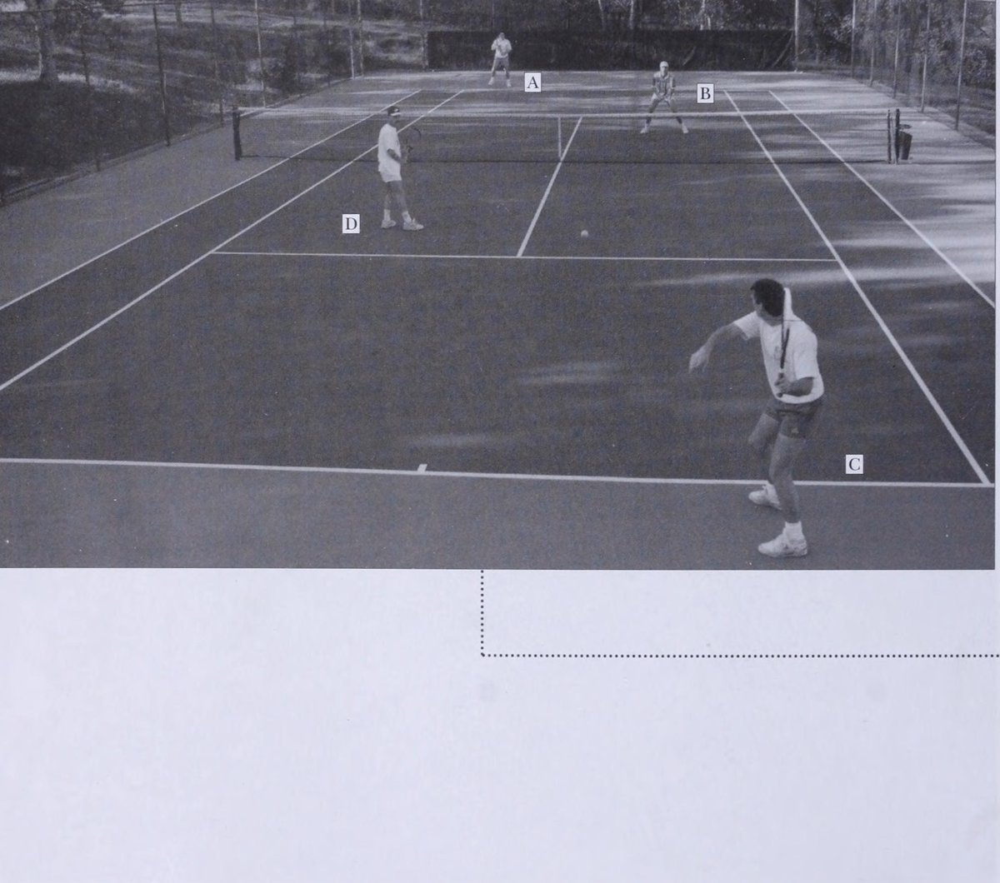
Giai đoạn 1: Người A dừng lại sau vạch baseline sau khi giao bóng.
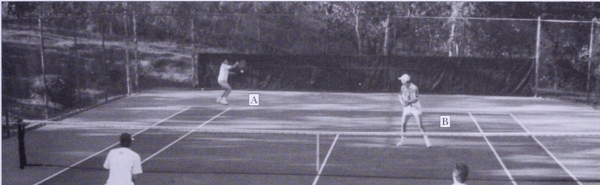
Giai đoạn 2: Người C bứt tốc lao lên lưới để tạo thế hai người trên lưới cùng Người D.
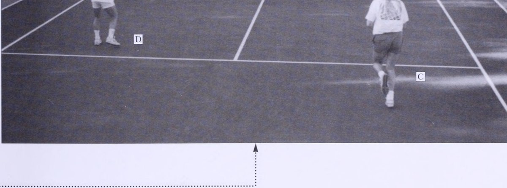
Giai đoạn 3: Người A phải tìm cách thoát hiểm trước Bức Tường chắn của đối phương.
Người A giao bóng và lao lên lưới. Người C tung cú trả bóng bạt sấm sét nhắm thẳng vào Người B (người đứng lưới) rồi ở lại cuối sân.
Người A tiếp tục tiến bước lên Vạch 3/4 để hỗ trợ đồng đội.
Người B giữ vững vị trí, không lùi bước, khóa chặt cổ tay và dùng chính lực bóng của Người C để bạt bóng xuyên qua vị trí của Người D.
Người C ở lại sau vạch cuối sân để quan sát pha phản công.
Người D giữ vững vị trí nhưng phải cực kỳ cảnh giác trước cú volley phản xạ cực mạnh hướng vào người mình từ Người B.
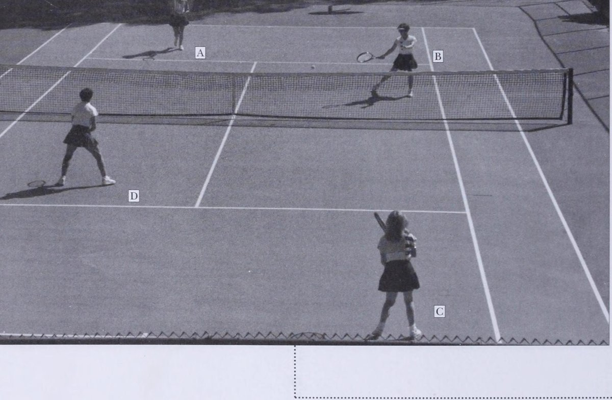
Giai đoạn 1: Người C tung cú trả bóng uy lực nhắm thẳng vào người Người B.
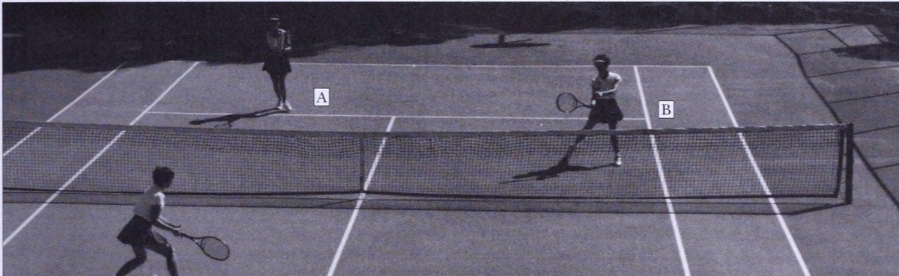
Giai đoạn 2: Người B vững vàng chặn quả volley uy lực hướng về phía Người D.
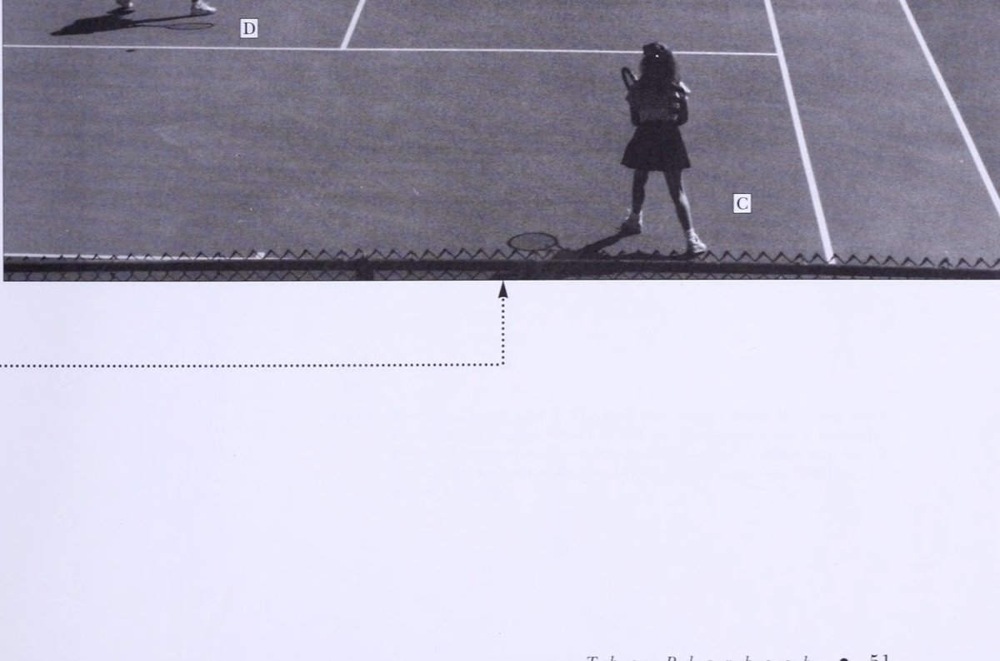
Giai đoạn 3: Người A tiếp tục dâng lên hoàn thiện Bức Tường cùng Người B.
Người A giao bóng và lao lên lưới. Người C tung cú trả bóng căng đi thấp dưới tầm lưới về phía Người B rồi lao lên sau cú đánh.
Người A tiếp tục tiến nhanh lên Vạch 3/4.
Người B thực hiện cú gạt bóng chạm nhẹ tinh tế (soft touch dip) vào góc ngắn chéo sân cách xa tầm với của Người C đang lao lên.
Người C gắng sức lao chéo lên cứu đường bóng góc ngắn hiểm hóc.
Người D có thể phải chạy ngang sang hỗ trợ đuổi bóng nếu Người C không với tới.
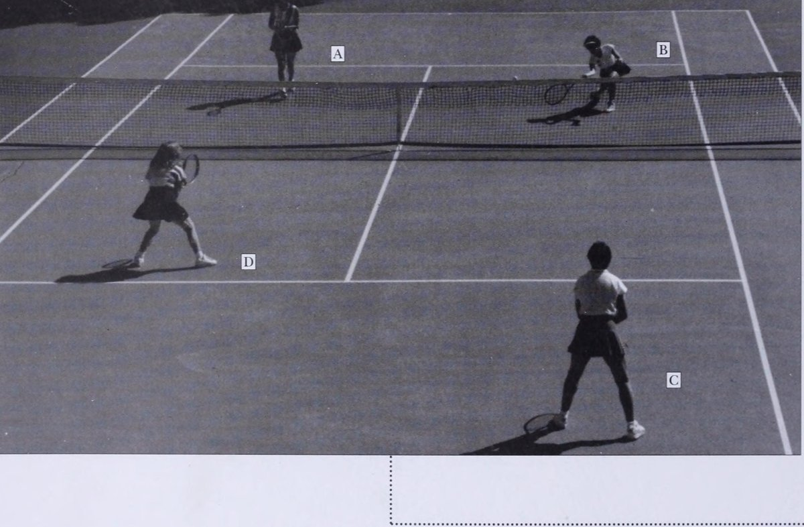
Giai đoạn 1: Người B đón đường bóng thấp dưới mép lưới bằng cú chạm vợt mềm mại.
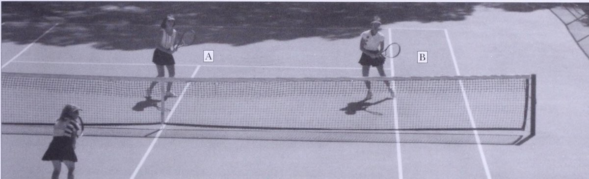
Giai đoạn 2: Trái bóng rơi nhẹ vào góc ngắn, Người C dốc sức lao lên cứu bóng.
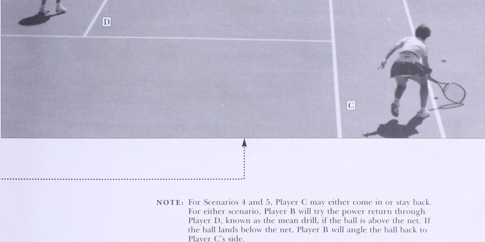
Giai đoạn 3: Người A và B chiếm ưu thế tuyệt đối trên lưới.
Người A giao bóng và ở lại sau vạch đáy sân. Người C trả bóng bổng về phía Người B.
Người A lập tức bứt tốc lao lên Vạch 3/4. Khi đồng đội được đối thủ mời gọi vào thế tấn công thuận lợi, bạn phải lập tức lao lên lưới để tiếp ứng và gia tăng áp lực.
Người B giữ vững vị trí, nhảy lên đập quả smash sấm sét xuyên qua người Người D hoặc Người C.
Người C ở lại cuối sân trong tư thế co cụm phòng ngự.
Người D giữ nguyên vị trí và cố gắng phản xạ để sống sót trước cú smash dữ dội.
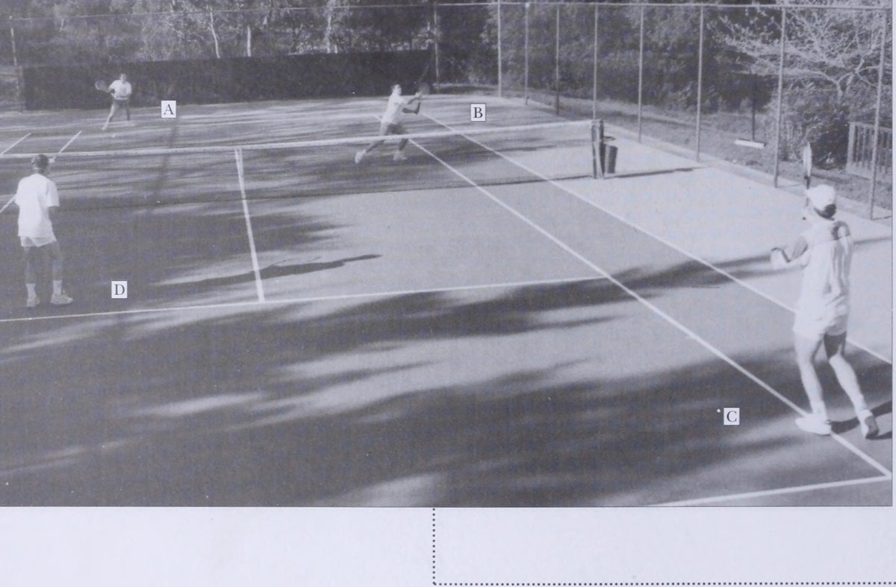
Giai đoạn 1: Bóng bổng bay đến tầm vợt của Người B, Người A lập tức xuất phát lao lên tiếp ứng.
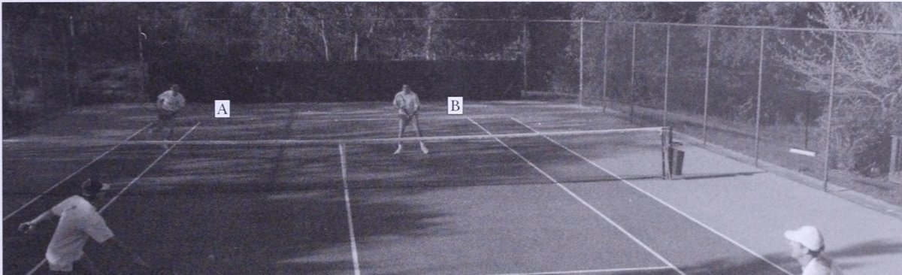
Giai đoạn 2: Người B bật nhảy tung cú smash kết liễu uy lực.
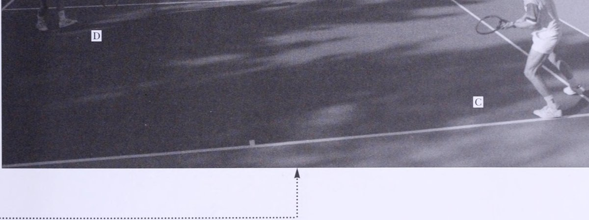
Giai đoạn 3: Cả hai tay vợt đội giao bóng hoàn tất việc chiếm lĩnh lưới.
Người A giao bóng và ở lại sau vạch đáy sân. Người C trả bóng đi thấp chìm về phía Người B rồi dâng lên.
Người A lập tức lao nhanh lên Vạch 3/4 để hỗ trợ Người B.
Người B khéo léo gạt cú bóng thấp vào góc ngắn hướng về phía Người C đang di chuyển lên.
Người C tiếp tục guồng chân lao về phía trước để cứu đường bóng ngắn.
Người D giữ vị trí, cố gắng đọc hướng xử lý tiếp theo của Người B.
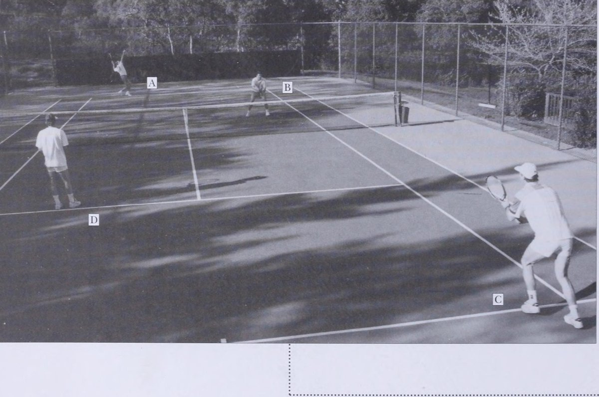
Giai đoạn 1: Người B khụy gối gạt bóng góc ngắn hiểm hóc.
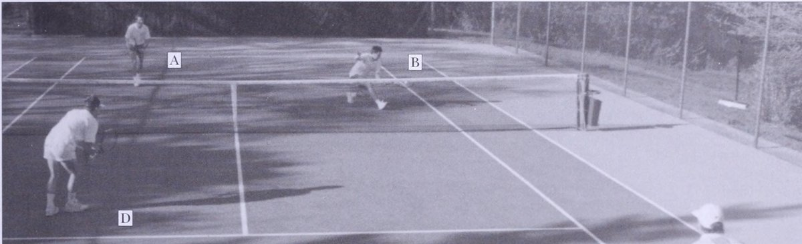
Giai đoạn 2: Người C nỗ lực tăng tốc cứu bóng sát lưới.
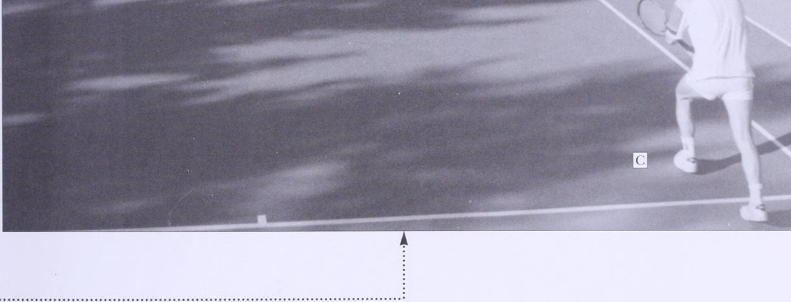
Giai đoạn 3: Người A kịp thời có mặt trên lưới cùng Người B tạo thế áp đảo.
Người A giao bóng và lao lên lưới. Người C tung cú lốp bóng trả giao nhắm về phía Người A.
Người A hãm đà lao lên, dừng bộ chân chuẩn xác, bật nhảy đập quả overhead smash, sau đó tiếp tục tiến bước lên lưới.
Người B ban đầu lùi lại để bọc lót quả lốp, nhưng khi nhận thấy Người A hoàn toàn làm chủ được trái bóng, anh lập tức quay người tiến sát lại lưới.
Người C giữ vị trí nếu Người A tung cú smash uy lực, chuẩn bị tư thế cứu bóng.
Người D đang ở Vạch 3/4 phải lập tức lùi nhanh về vạch đáy sân cùng Người C để phòng thủ trước cú đập trên đầu của Người A.
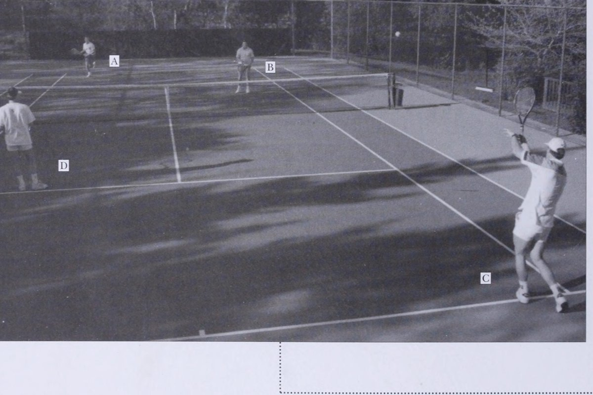
Giai đoạn 1: Người A hãm phanh chân, vào bộ chuẩn bị đập smash trên đầu.
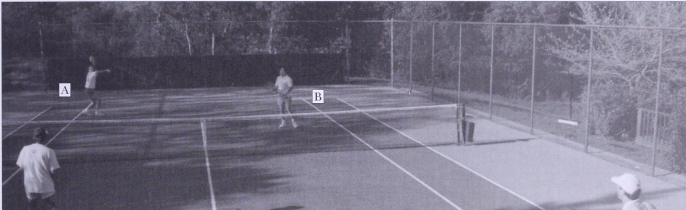
Giai đoạn 2: Người B quay lại áp sát lưới khi Người A làm chủ pha bóng.
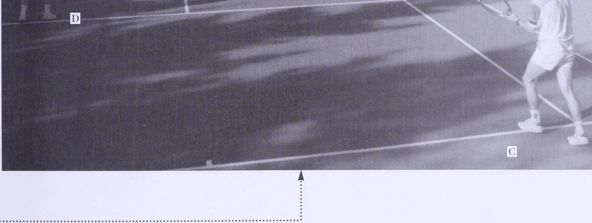
Giai đoạn 3: Người D lùi sâu về baseline để tìm cơ hội phòng ngự.
Người A giao bóng và lao lên lưới. Người C tung cú lốp bóng trả giao vượt qua tầm với của Người A.
Người A quay người chạy lùi về vạch cuối sân, để bóng nảy một nhịp trên mặt sân rồi mới thực hiện cú đánh trả.
Người B lập tức rút lui về vạch cuối sân cùng với đồng đội của mình để tái thiết lập phòng tuyến.
Người C nhận thấy cú lốp bóng thành công lập tức lao nhanh lên chiếm lĩnh lưới.
Người D giữ nguyên vị trí lưới và tiến sát hơn để cùng Người C lập thành Bức Tường tấn công.
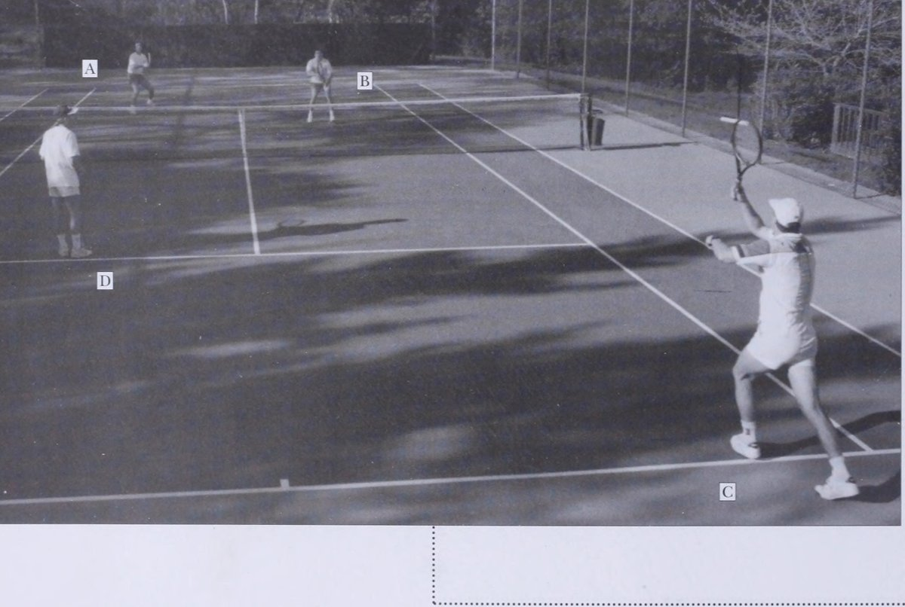
Giai đoạn 1: Cú lốp bóng vượt qua tầm với, Người A quay lưng chạy về cứu bóng sau khi nảy.
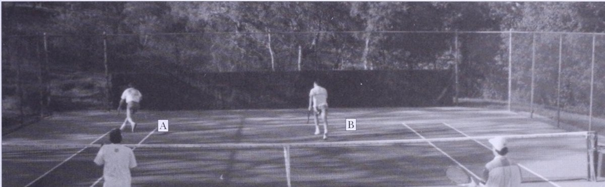
Giai đoạn 2: Người B đồng bộ rút lui về baseline cùng Người A.
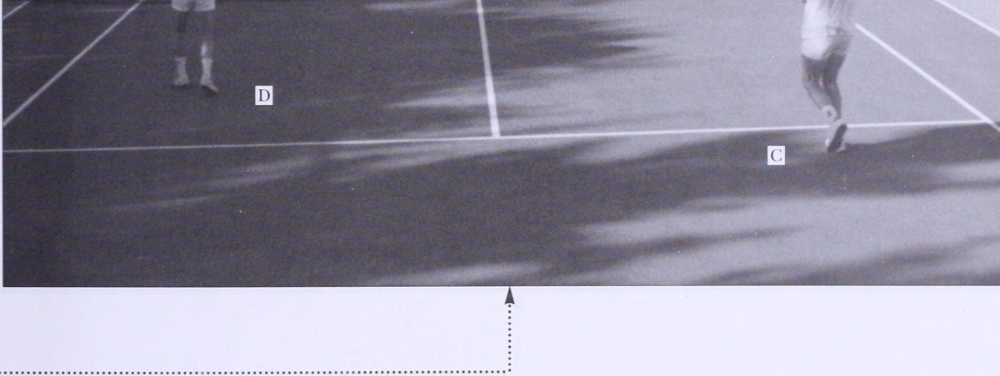
Giai đoạn 3: Đội của Người C và D tràn lên chiếm trọn khu vực lưới.
Người A giao bóng và ở lại cuối sân. Người C tung cú lốp bóng ngắn về phía Người A.
Người A tiến nhanh lên và đập quả overhead smash dứt điểm.
Người B giữ vững vị trí lưới, sẵn sàng bồi thêm quả volley nếu bóng bật lại.
Người C giữ vị trí ở cuối sân trong tư thế phòng thủ.
Người D giữ vị trí nhưng hạ thấp trọng tâm cảnh giác.
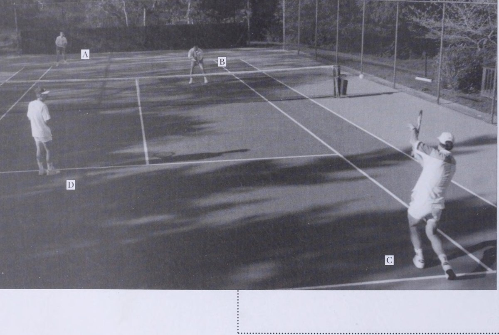
Giai đoạn 1: Người A bước lên đón quả lốp ngắn.
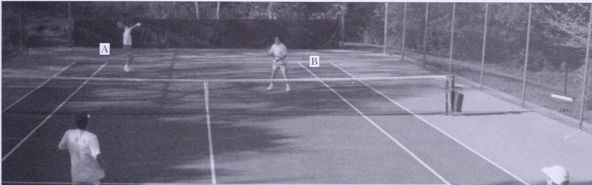
Giai đoạn 2: Tung cú smash dứt điểm từ khu vực giữa sân.
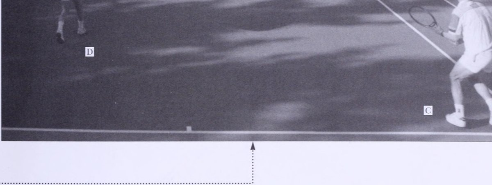
Giai đoạn 3: Người B chực chờ bắt gọn bóng trả tại lưới.
Người A giao bóng và lao lên lưới. Người C tung cú lốp bóng qua đầu Người B.
Người A tiến nhanh lên Vạch 3/4 nếu Người B có thể lùi lại tự xử lý được cú overhead.
Người B lùi chân đập quả overhead smash rồi lập tức quay trở lại Vạch 3/4.
Người C giữ vị trí sau vạch đáy sân.
Người D giữ vị trí nếu bóng lốp đi sâu; nếu bóng lốp quá ngắn, Người D phải rút lui khẩn cấp về baseline.
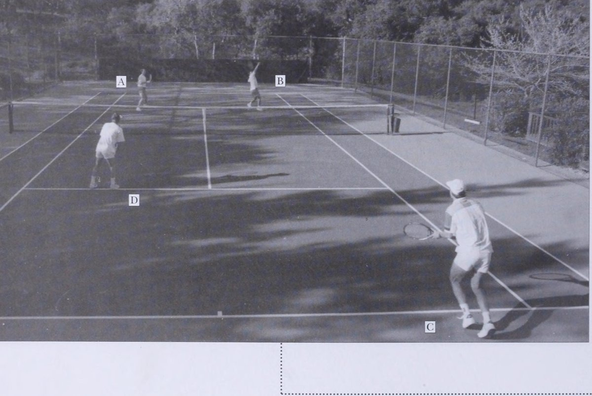
Giai đoạn 1: Người B lùi bước bắt quả smash trên đầu.
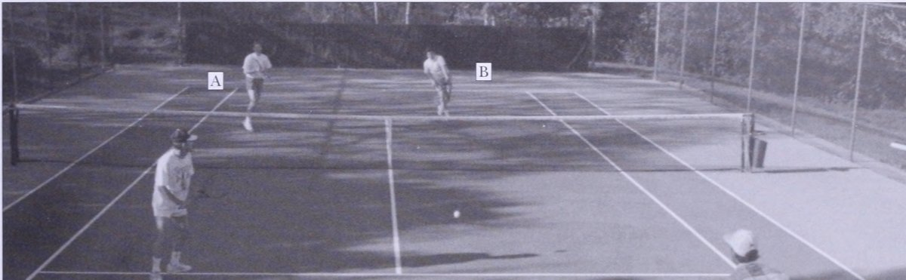
Giai đoạn 2: Người A tiến lên Vạch 3/4 hỗ trợ.
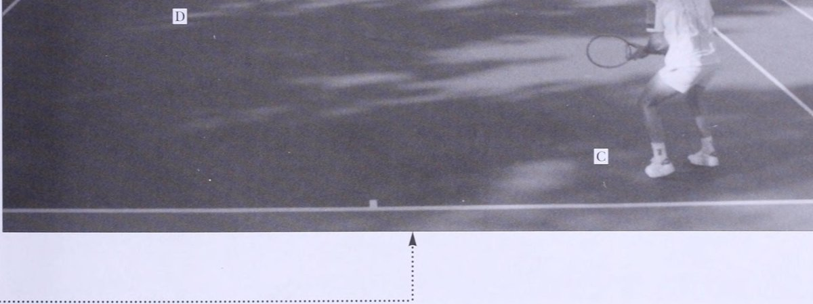
Giai đoạn 3: Người B trở lại vị trí cũ sau cú đập.
Người A giao bóng và lao lên lưới. Người C tung cú lốp bóng hiểm hóc vượt qua tầm với của Người B.
Người A lập tức lùi lại cùng với Người B về vạch cuối sân.
Người B hô 'Bạn cứu!' (Yours!) hoặc chạy lùi theo bóng, để bóng nảy rồi mới đánh trả.
Người C và D cùng tiến lên chiếm lưới.
Người D áp sát lưới sẵn sàng kết liễu.
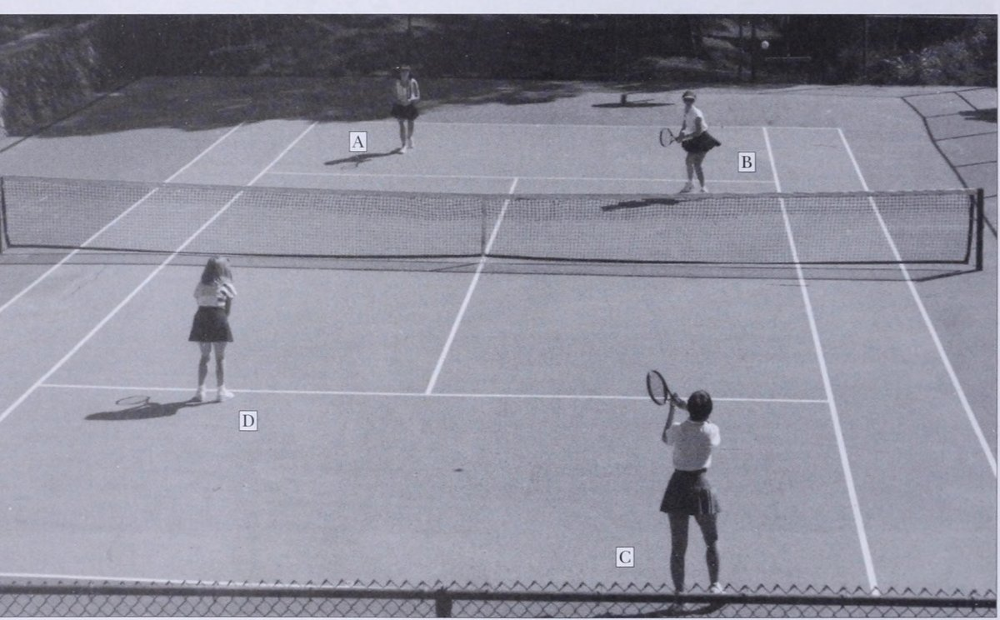
Giai đoạn 1: Bóng lốp bổng qua đầu Người B.
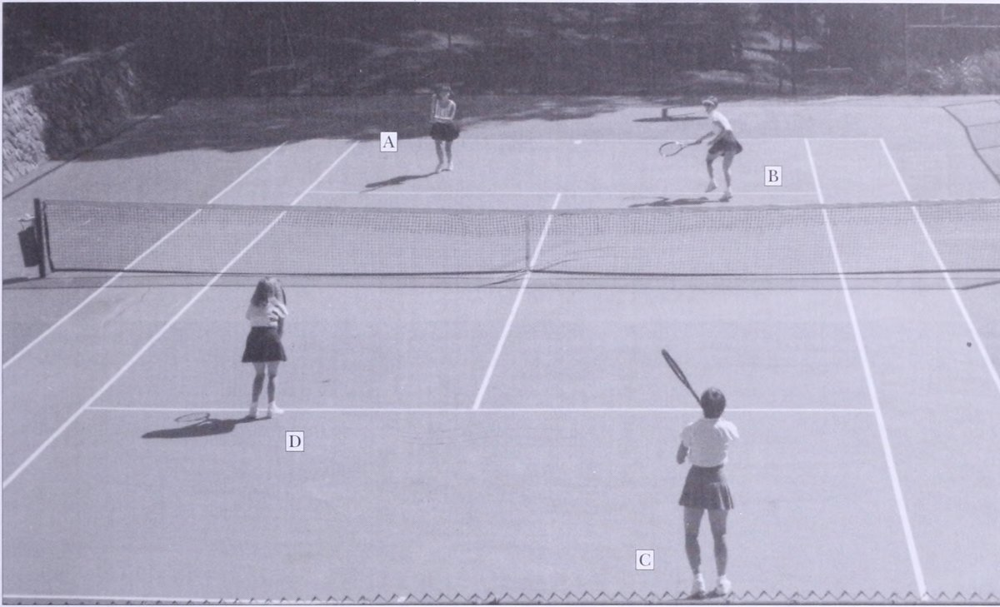
Giai đoạn 2: Cả hai người A và B cùng lùi sâu về baseline.
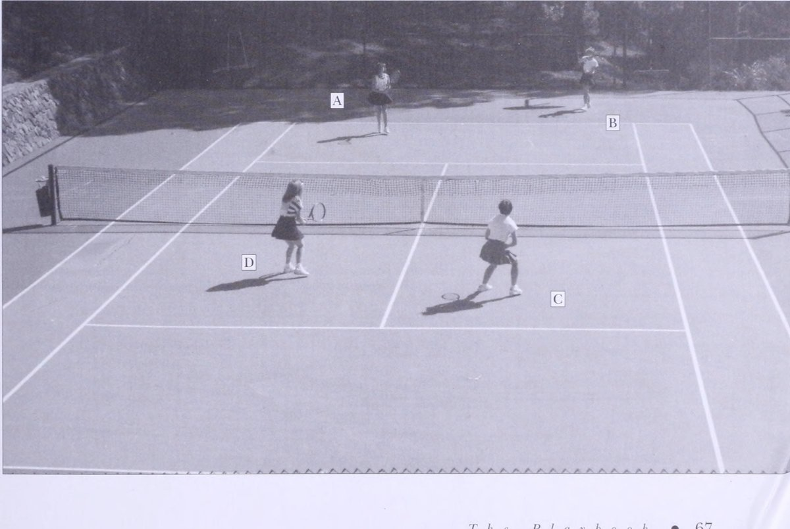
Giai đoạn 3: Đối thủ tràn lên chiếm lĩnh lưới.
Người A giao bóng và ở lại cuối sân. Người C lốp bóng qua đầu Người B, Người B tự lùi lại đập smash.
Người A tiến lên Vạch 3/4 để tiếp ứng.
Người B lùi lại bật nhảy tung cú overhead smash.
Người C giữ vị trí phòng ngự.
Người D giữ vị trí nếu bóng sâu hoặc rút lui nếu bóng ngắn.
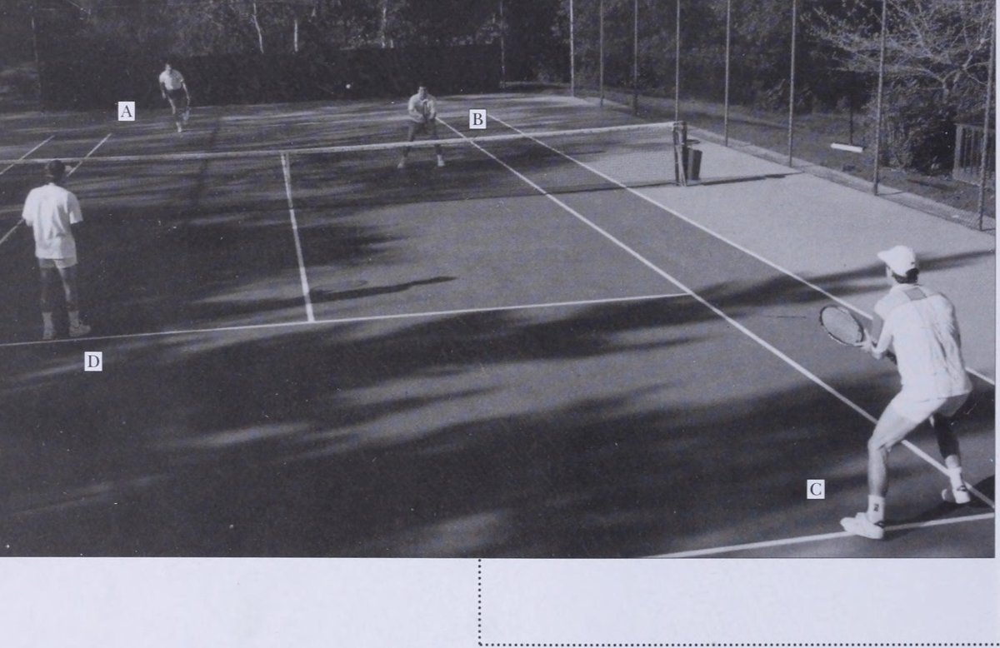
Giai đoạn 1: Người B di chuyển giật lùi đón bóng.
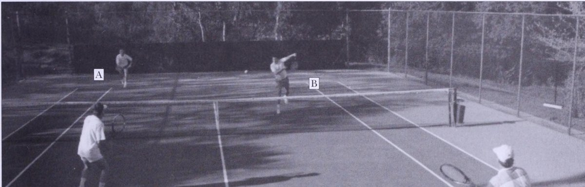
Giai đoạn 2: Người B đập smash, Người A tiến lên Vạch 3/4.
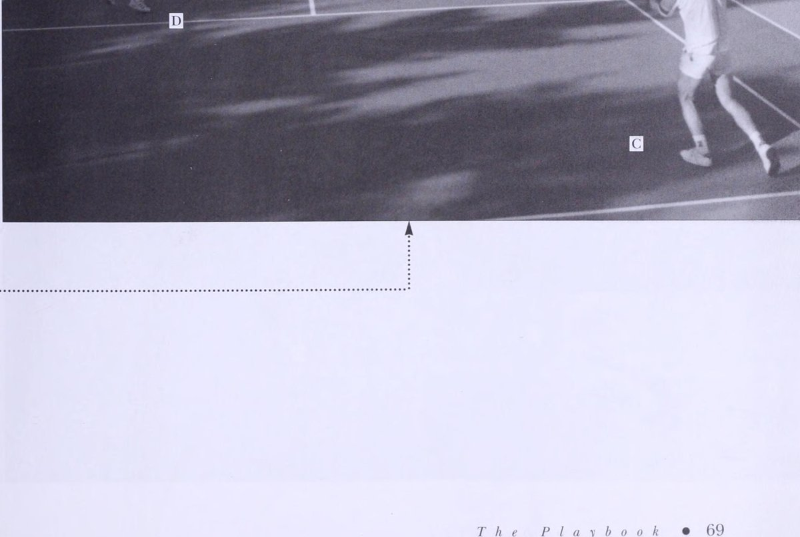
Giai đoạn 3: Hai người lập thành hàng rào lưới.
Người A giao bóng và ở lại cuối sân. Người C lốp bóng hiểm qua đầu Người B, Người B hô 'Cứu!' (Help!).
Người A chạy chéo sang phần sân của Người B và chọn: hoặc bạt bóng trên không (blitz), hoặc để bóng nảy rồi đánh trả.
Người B đổi cánh (switch) chạy sang phần sân của Người A: nếu Người A bắt bóng trên không thì Người B lao lên lưới, nếu Người A chờ bóng nảy thì Người B lùi về baseline.
Người C tiến lên lưới cùng Người D.
Người D giữ vị trí lưới.
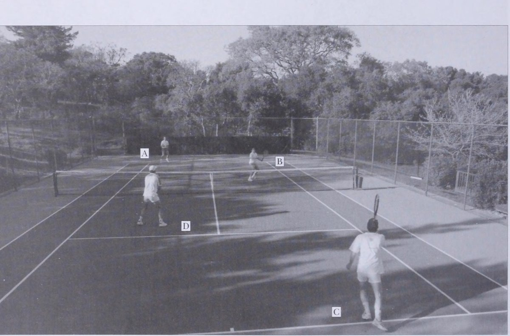
Giai đoạn 1: Người B hô 'Cứu!', Người A lập tức bứt tốc chạy chéo sang cánh của B.
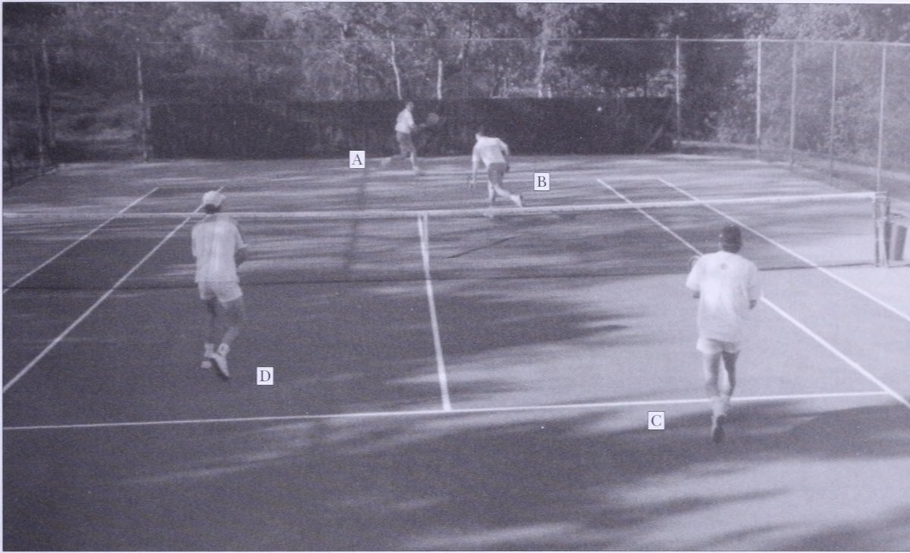
Giai đoạn 2: Người B hoán đổi cánh di chuyển sang phần sân của A.
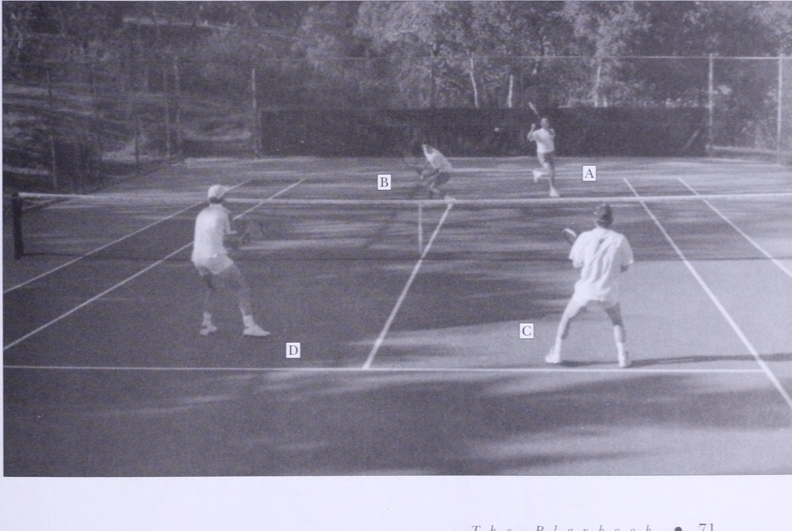
Giai đoạn 3: Hai người hoàn tất việc hoán đổi vị trí nhịp nhàng.
Người A giao bóng góc rộng ra mang cho Người C rồi lao lên lưới. Người C trả bóng chéo sân.
Người A trượt chân về phía trung lộ để bịt khoảng trống.
Người B bước hai bước chếch về phía hành lang dọc dây (alley) của mình.
Người C do bị kéo ra ngoài sân nên góc đánh dọc dây trở nên thuận lợi hơn, tuy nhiên khoảng cách di chuyển trở lại sẽ xa hơn.
Người D trượt hai bước về phía giữa sân để hỗ trợ Người C.
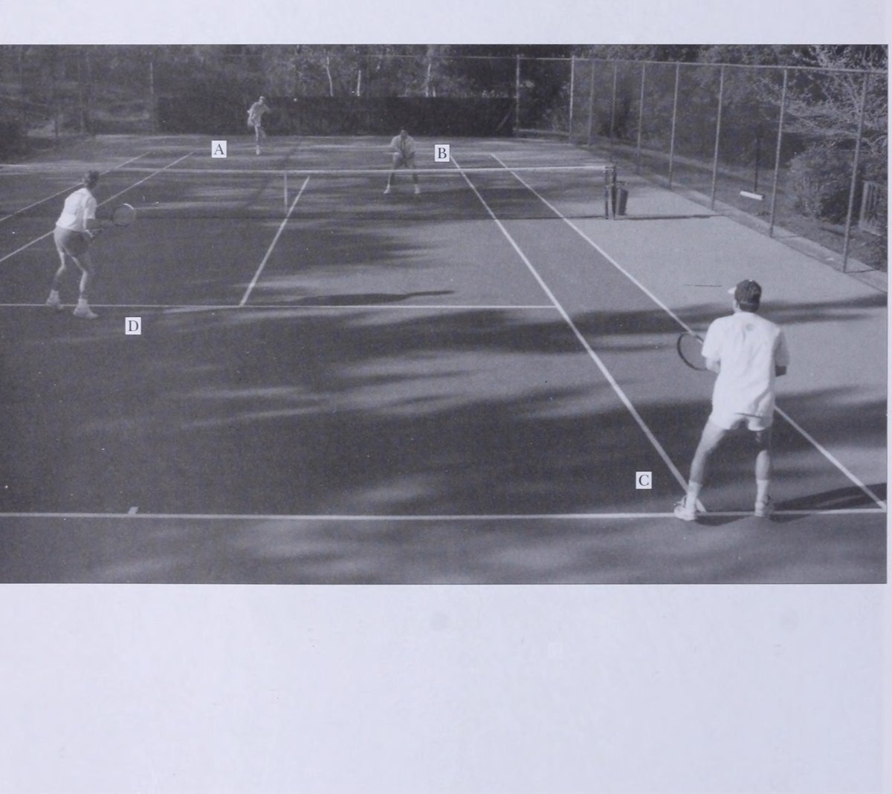
Giai đoạn 1: Người A giao bóng góc rộng kéo Người C ra khỏi sân.
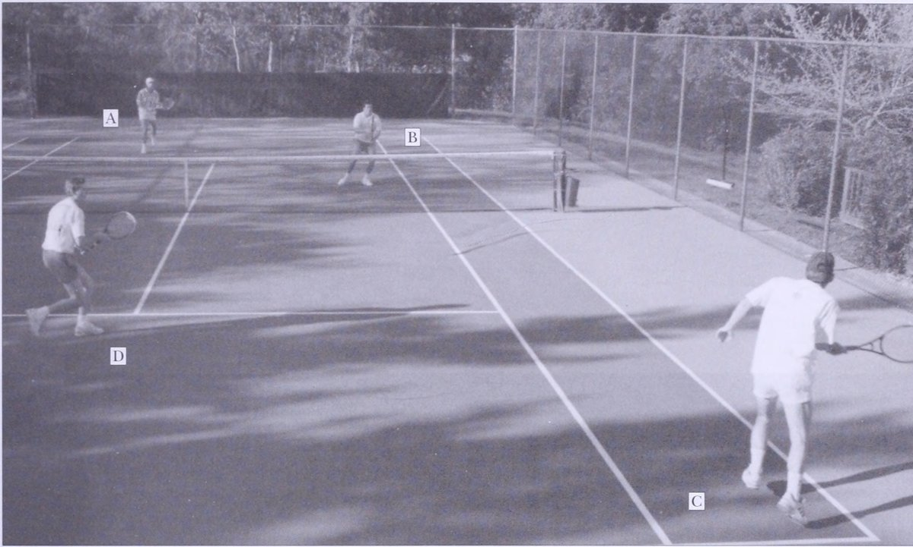
Giai đoạn 2: Người B dịch chuyển bảo vệ hành lang dọc dây.
Giai đoạn 3: Người D trượt vào giữa sân hỗ trợ bọc lót.
Người A giao bóng góc rộng cho Người C và chọn ở lại cuối sân.
Người A trượt chân vào giữa sân để đón đường bóng đánh trả.
Người B trượt hai bước sang bảo vệ hành lang dọc dây.
Người C trả bóng bất kỳ đâu; tuy nhiên vì góc sân đã mở rộng, cú đánh dọc dây đang có lợi thế lớn cho cô ấy.
Người D trượt hai bước vào giữa sân.
Giai đoạn 1: Người A dịch chuyển vào trung tâm sau vạch baseline sau cú giao bóng kéo góc.
Người A giao bóng và lao lên lưới. Người C trả bóng ngắn và bổng lơ lửng về phía Người A.
Người A sau bước split-step lập tức lao mạnh vào bóng, tung đòn kết liễu bằng cú bạt bóng dọc dây hoặc đánh góc ngắn hiểm hóc. Nhờ bóng bay bổng có thêm thời gian, Người A tiến sâu qua 'Vạch chiến thắng' (Vạch 3/4) để đè bóng.
Người B giữ vững vị trí, sẵn sàng bồi thêm đòn kết liễu.
Người C giữ vị trí trong nỗi bất an.
Người D dốc toàn lực chạy tháo thân về phía sau để tránh cú bạt bóng sấm sét!
Giai đoạn 1: Người A lao lên đè quả bóng bổng lơ lửng ngay trên Vạch 3/4.
Người A giao bóng và lao lên lưới. Người C trả bóng bổng lơ lửng thẳng vào vị trí của Người B.
Người A tiếp tục lao nhanh áp sát lưới.
Người B lập tức tấn công quả bóng để giành điểm thắng. Anh có thể bạt bóng cực mạnh vòng qua Người D hoặc gạt góc ngắn trừng phạt Người C.
Người C đứng chôn chân tại chỗ.
Người D chạy thoát thân về cuối sân!
Giai đoạn 1: Người B đón quả bóng bổng ngay trước mặt tại lưới.
Giai đoạn 2: Tung cú volley đè bóng cắm thẳng vào góc sân đối diện.
Giai đoạn 3: Người A và B hoàn tất việc chiếm trọn vẹn điểm số.
Bắt lưới cơ bản: Người A giao bóng và lao lên lưới; Người C trả bóng chéo sân theo thói quen.
Người A giao bóng vào góc chữ T (trung lộ), bước hai bước lên phía trước rồi bẻ hướng chạy chéo sang phần sân bên kia để trám vào vị trí Người B bỏ lại. Người A vẫn phải chạm tới vạch giao bóng.
Người B kiên nhẫn đợi đến khi bóng chạm đất và đầu Người C cúi xuống đánh bóng, lập tức bứt tốc chạy chéo góc cắt mặt, tung cú bạt sấm sét vòng qua Người D hoặc gạt góc ngắn về phía Người C, sau đó tiếp tục đà di chuyển để đổi hẳn sang cánh bên kia.
Người C bị bất ngờ, lúng túng hoặc đánh bóng thẳng vào tầm vợt của Người B.
Người D chỉ biết hy vọng điều may mắn và cố gắng giữ vững vị trí phòng ngự.
Giai đoạn 1: Người B bứt tốc cắt ngang mặt lưới ngay khi Người C cúi đầu đánh bóng.
Giai đoạn 2: Người B tung cú bạt kết liễu và Người A chạy chéo sang cánh đối diện trám chỗ.
Bắt lưới khi giao bóng ở lại cuối sân: Người A giao bóng và ở lại; Người C trả bóng chéo sân.
Người A giao bóng xong, dừng lại một nhịp quan sát rồi bẻ bước chạy sang phần sân bên kia sau vạch baseline.
Người B đợi bóng nảy và đầu C cúi xuống, bứt tốc chạy chéo cắt mặt lưới tung cú bạt uy lực kết liễu điểm số.
Người C trả bóng chéo sân theo quán tính và sập bẫy.
Người D cố gắng trụ vững vị trí.
Giai đoạn 1: Người B xuất phát cắt ngang mặt lưới.
Giai đoạn 2: Người B chạm bóng dứt điểm trên không trung.
Giai đoạn 3: Người A di chuyển đồng bộ sau vạch baseline sang cánh đối diện.
Người A giao bóng và bắt lưới; Người C nhận biết và đánh trả dọc dây (Down the Line).
Người A chạy chéo sang cánh đối diện và đón bắt cú volley đầu tiên đánh sâu trả lại cho Người C.
Người B sau khi cắt ngang qua lưới bật nảy chân tại Vạch 3/4 bên phần sân mới.
Người C di chuyển tiến lên hoặc lùi lại.
Người D phải lập tức trượt chân vào giữa sân để khép khoảng trống chết người giữa C và D.
Giai đoạn 1: Người C đánh dọc dây, Người A chạy cắt sang đón quả volley.
Giai đoạn 2: Người A đánh quả volley sâu vào góc sân.
Giai đoạn 3: Người D phải trượt vào giữa sân để cứu nguy khoảng trống.
Người A giao bóng ở lại cuối sân; Người C đánh trả dọc dây thành công.
Người A chạy sang cánh đối diện và đánh quả bóng sâu trả lại cho Người C.
Người B hoán đổi vị trí hoàn toàn với Người A.
Người C ở lại cuối sân; nếu Người C dâng lên lưới thì Người A buộc phải tìm phương án thoát hiểm.
Người D siết chặt khu vực trung lộ.
Giai đoạn 1: Người A chạy ngang sân cứu quả bóng dọc dây của C.
Giai đoạn 2: Người B và Người A hoàn tất việc đổi cánh.
Giai đoạn 3: Thế trận được tái thiết lập cân bằng.
Người A giao bóng và lên lưới; Người C trả bóng bạt cực mạnh vào thẳng trung lộ.
Người A giao bóng và lao lên lưới hỗ trợ.
Người B trong quá trình di chuyển bắt lưới phải vươn với vợt ra phía sau lưng để chạm vợt cản bóng.
Người C ở lại cuối sân hoặc dâng lên.
Người D giữ vững vị trí.
Giai đoạn 1: Bóng trả lao thẳng vào giữa sân tốc độ cao.
Giai đoạn 2: Người B xoay cổ tay chặn quả volley phản xạ.
Giai đoạn 3: Người A và B phối hợp bịt kín trung lộ.
Người A giao bóng và lên lưới; Người B bắt lưới nhưng Người C tung cú lốp bóng qua đầu Người B.
Người A đang di chuyển bứt tốc lập tức phanh gấp và xoay người đón đập quả overhead smash.
Người B chạy tới Vạch 3/4 ở phần sân mới.
Người C tiến lên nếu quả lốp sâu, hoặc giữ vị trí nếu bóng ngắn.
Người D cố gắng phòng thủ.
Giai đoạn 1: Cú lốp bóng bổng qua đầu Người B đang di chuyển.
Giai đoạn 2: Người A hãm đà phanh gấp, ngửa người đập smash.
Giai đoạn 3: Người B an tọa tại vị trí lưới bên cánh mới.
Người A giao bóng và lên lưới; Người B bắt lưới; Người C lốp bóng nhắm về phía Người A.
Người A dừng chân, ngắm bóng và tung cú smash quyết đoán.
Người B chiếm lĩnh Vạch 3/4 ở phần sân mới.
Người C và D chuẩn bị phòng ngự.
Người D giữ nguyên vị trí.
Giai đoạn 1: Người A dừng bộ chân, ngắm hướng bóng rơi.
Giai đoạn 2: Bật nhảy thực hiện cú smash đè bóng uy lực.
Giai đoạn 3: Người B bảo vệ phần sân đối diện.
Giả vờ bắt lưới (Fake Poach): Người A giao bóng lên lưới; Người B nhử bước giả bắt lưới; Người C trả chéo sân.
Người A bắt cú volley đầu tiên đưa bóng sâu trở lại cho Người C.
Người B nhử một bước nhanh vào giữa rồi đạp chân quay lại vị trí cũ, giữ nguyên bên cánh của mình.
Người C có thể dâng lên hoặc ở lại.
Người D giữ vị trí.
Giai đoạn 1: Người B nhử động tác di chuyển sang trung lộ đánh lừa thị giác đối thủ.
Giai đoạn 2: Người B lập tức quay ngoắt về vị trí cũ.
Giai đoạn 3: Người A thoải mái bắt quả volley chéo sân an toàn.
Giả vờ bắt lưới thành công rực rỡ: Người B nhử bước; Người C tưởng thật vội vàng bạt dọc dây và sập bẫy!
Người A tiếp tục dâng lên chiếm lĩnh lưới.
Người B sau cú nhử bước đã quay lại đứng phục kích sẵn tại hành lang dọc dây, dễ dàng gạt góc ngắn về phía C hoặc đập thẳng vào người D.
Người C bàng hoàng nhận ra mình đã đánh bóng thẳng vào chiếc bẫy giăng sẵn của Người B.
Người D cố gắng khép trung lộ trong vô vọng.
Giai đoạn 1: Người C nhìn thấy Người B nhấp nhổm vội đánh dọc dây.
Giai đoạn 2: Người B phục sẵn bên dọc dây tung cú volley kết liễu điểm số.
Giai đoạn 3: Người A tiến lên ăn mừng cùng Người B.
Người A giao bóng và lên lưới; Người C trả bóng cực khó cắm vào chân Người A.
Người A cố gắng vớt quả volley thấp đưa bóng chéo sân trở lại.
Người B giữ vững vị trí của mình.
Người C chạy chéo sang phía bên kia.
Người D di chuyển chéo vào góc và tung cú bạt bóng sấm sét xuyên qua bất kỳ tay vợt nào của đội đối phương.
Giai đoạn 1: Người A khụy chân vớt cú volley thấp ở tầm mắt cá chân.
Giai đoạn 2: Bóng bay bổng nhẹ, Người D lập tức lao vào vồ bóng.
Giai đoạn 3: Người D tung cú smash dứt điểm dũng mãnh.
Người A giao bóng lên lưới; Người C trả chéo sân; Người A bạt quả volley cực căng vào trung lộ.
Người A tung cú volley uy lực vào giữa sân đối phương.
Người B giữ nguyên vị trí lưới.
Người C ở lại hoặc lên lưới. Nếu Người D băng sang bắt bóng, Người C phải đổi sang cánh của D.
Người D chủ động di chuyển bắt bóng ở trung lộ, đánh quả bóng cực mạnh vào Người A hoặc Người B.
Giai đoạn 1: Người A volley vào trung lộ và Người D xuất thần băng ngang cướp bóng.
Đội hình Úc cơ bản: Người A và Người B cùng đứng về một nửa sân; Người C trả bóng chéo sân.
Người A đứng giao bóng sát điểm đánh dấu giữa sân (center mark) như khi đánh đơn. Sau khi giao bóng, Người A bứt tốc chạy sang phần sân đối diện để bao quát cánh trống.
Người B ngồi xổm hoặc đứng tại Vạch 3/4 ngay cùng bên với Người A, bịt kín đường trả bóng chéo sân sở trường của C.
Người C bị triệt tiêu góc đánh chéo sân quen thuộc, buộc phải đánh mạo hiểm hoặc đánh vào nơi Người A đang chạy tới.
Người D giữ vị trí lưới.
Giai đoạn 1: Người A và B cùng đứng một bên sân, Người A chạy sang cánh kia ngay sau cú phát bóng.
Đội hình Úc: Người C chấp nhận mạo hiểm đánh trả dọc dây (Down the line).
Người A lao lên bắt cú volley thẳng, đánh sâu chéo sân về phía Người C.
Người B giữ vững vị trí lưới bên cánh của mình.
Người C di chuyển tìm cơ hội.
Người D trượt vào giữa sân để khép khoảng trống.
Giai đoạn 1: Người C đánh dọc dây mạo hiểm.
Giai đoạn 2: Người A đón bắt quả volley thẳng mặt sâu vào cuối sân.
Giai đoạn 3: Người D vội vàng trượt vào giữa sân bọc lót.
Đội hình Úc: Người A giao bóng và Người B di chuyển bắt lưới cắt mặt.
Người A sau khi giao bóng di chuyển thẳng lên lưới bên cánh của mình.
Người B bứt tốc chạy cắt sang cánh đối diện để cướp cú trả bóng dọc dây của Người C.
Người C tưởng đối thủ để hở dọc dây liền đánh bóng thẳng vào tay Người B!
Người D giữ nguyên vị trí.
Giai đoạn 1: Người B xuất phát cắt ngang sang cánh bên kia.
Giai đoạn 2: Bắt gọn quả trả bóng dọc dây của Người C.
Giai đoạn 3: Người A tiến thẳng lên chiếm lĩnh cánh còn lại.
Đội hình Úc: Người C tung cú lốp bóng trả giao vượt qua đầu Người B.
Người A phanh lại, chạy vòng ra sau đập cú overhead hoặc để bóng nảy đánh trả.
Người B hoán đổi vị trí chạy về cánh đối diện.
Người C dâng lên lưới.
Người D giữ vị trí.
Giai đoạn 1: Người C tung cú lốp bóng giải tỏa qua đầu Người B.
Giai đoạn 2: Người A lùi sâu cứu bóng và chuẩn bị phản công.
Giai đoạn 3: Hai đội tái lập thế trận tranh chấp.
Phân khu 4 (Sát vạch đáy sân): Người C đánh bóng sâu sát mép vạch baseline của Người A.
Người A chủ động lùi sâu ra sau vạch đáy sân, đợi bóng hạ thấp độ cao rồi tung cú đánh xoáy cầu vồng (power loop) đưa bóng chéo sân sâu trở lại, sau đó giữ nguyên vị trí tại baseline.
Người B giữ vững vị trí tại Vạch 3/4 nhưng hạ thấp trọng tâm cảnh giác.
Người C giữ vị trí ở baseline.
Người D giữ vị trí lưới.
Giai đoạn 1: Người A lùi sâu sau vạch baseline tung cú đánh xoáy an toàn từ Phân khu 4.
Phân khu 3 (Vùng cuối sân tiêu chuẩn): Người C đánh bóng vào khu vực trước vạch baseline 1-2 mét.
Người A đứng vững tại chỗ tung cú bạt chéo sân ổn định, không dâng lên cũng không lùi lại.
Người B giữ nguyên vị trí, rình rập cơ hội bắt lưới nếu đường bóng của C bay chệch hướng.
Người C giữ vị trí đấu bóng bền chéo sân.
Người D sẵn sàng bắt lưới nếu Người C có đường bóng ép sân tốt.
Giai đoạn 1: Người A vào bộ ổn định tung cú đánh bóng bền chéo sân từ Phân khu 3.
Phân khu 2 (Vùng giữa sân — Vạch phát bóng): Người C đánh bóng non rơi vào khu vực vạch phát bóng.
Người A lập tức tiến bước vào trong sân, tung cú bạt tấn công uy lực chéo sân hoặc dọc dây, sau đó theo đà lao thẳng lên Vạch 3/4 để hợp cùng Người B lập Bức Tường!
Người B áp sát lưới hơn để chuẩn bị dứt điểm cú trả bóng phòng ngự yếu ớt của đối thủ.
Người C lùi sâu chống đỡ đòn tấn công.
Người D rút lui về phía sau để tránh bị bắn phá.
Giai đoạn 1: Người A bước chân vào sân tung cú đánh tiếp cận (approach shot) từ Phân khu 2 rồi lên lưới.
Phân khu 1 (Vùng cận lưới — Bóng ngắn): Người C đánh bóng rơi ngắn ngay gần lưới.
Người A lao nhanh vào sát lưới, tung cú đánh tiếp cận (approach shot) bẻ góc ngắn chéo sân hoặc bỏ nhỏ dứt điểm điểm số, áp sát mép lưới.
Người B giữ vững vị trí hỗ trợ bên cánh đối diện.
Người C dốc sức chạy lên cứu bóng trong tuyệt vọng.
Người D phải cực kỳ đề phòng hành lang dọc dây của mình.
Giai đoạn 1: Người A áp sát lưới tung đòn kết liễu từ Phân khu 1.
Pha bóng bền một lên một xuống: Người C đánh bóng cho Người B đang đứng lưới.
Người A tiến lên Vạch 3/4 hỗ trợ tạo Bức Tường.
Người B tung cú volley đè bóng bạt chéo qua người Người D hoặc gạt góc ngắn trừng phạt Người C.
Người C ở lại cuối sân.
Người D co cụm phòng ngự.
Giai đoạn 1: Người C đánh bóng vô tình tìm đến Người B.
Giai đoạn 2: Người B tung cú volley đè bóng hiểm hóc.
Giai đoạn 3: Người A tiến lên tiếp ứng hoàn hảo.
Người C đánh bóng vào trung lộ giữa hai đối thủ.
Người A và Người B cùng di chuyển vào bắt bóng; người có cú thuận tay hoặc ở vị trí thuận lợi hơn hô to 'Bóng tôi!' (Mine!).
Người không đánh nhường bước và lùi nhẹ bảo vệ cánh của mình.
Người C và D cùng đuổi bóng.
Người D lùi lại.
Giai đoạn 1: Bóng bay vào khe giữa sân.
Giai đoạn 2: Một người hô to và vung vợt quyết đoán.
Giai đoạn 3: Người còn lại chủ động nhường đường và bọc lót.
Người C tung cú lốp bóng ngắn về phía Người B.
Người A tiến lên Vạch 3/4.
Người B lùi chân đập quả overhead smash sấm sét.
Người C lùi sâu phòng thủ.
Người D chạy về cuối sân.
Giai đoạn 1: Người B lùi bước đón quả lốp ngắn.
Giai đoạn 2: Bật nhảy thực hiện cú smash cắm đất.
Giai đoạn 3: Đối thủ bất lực nhìn bóng nảy ra ngoài sân.
Người C lốp bóng sâu qua đầu Người B; Người B cúi đầu thụp xuống và đổi cánh.
Người A chạy sang cánh của B đón cú bóng nảy để đánh trả.
Người B cúi thấp đầu tránh bóng rồi chạy chéo sang phần sân của A.
Người C dâng lên lưới.
Người D giữ vị trí.
Giai đoạn 1: Người B cúi rạp người nhường bóng cho đồng đội phía sau.
Giai đoạn 2: Người A bứt tốc sang cánh cứu bóng.
Giai đoạn 3: Người B chạy sang cánh đối diện trám chỗ.
Người C đánh bóng chéo sân cho Người A; Người B chớp thời cơ bắt lưới (poach).
Người A di chuyển chéo sang cánh của B.
Người B băng ngang qua lưới tung cú volley cắt mặt ghi điểm trực tiếp.
Người C ngỡ ngàng.
Người D bất động.
Giai đoạn 1: Người B đọc được hướng đánh chéo sân của C.
Giai đoạn 2: Bứt tốc cắt mặt lưới bắt gọn quả volley.
Giai đoạn 3: Đội hình hoàn tất việc hoán đổi vị trí ăn mừng điểm số.
Người C lốp bóng sâu về phía Người A ở cuối sân.
Người A có ba lựa chọn: lốp bóng bổng sâu trở lại, tung cú bạt uy lực chéo sân, hoặc đánh góc ngắn bẻ hướng bóng.
Người B giữ vị trí lưới, sẵn sàng bồi đòn nếu đối thủ đánh hỏng.
Người C và D cùng dâng lên.
Người D canh chừng quả bóng dọc dây.
Giai đoạn 1: Người A lùi sâu đón bóng lốp tại baseline.
Giai đoạn 2: Tung cú đánh đáp trả chuẩn xác.
Giai đoạn 3: Duy trì thế trận phòng ngự chủ động.
Thoát hiểm cơ bản: Cả hai đội đều đang ở thế giằng co; Người C ép bóng vào góc sâu.
Người A tung cú lốp bóng giải tỏa bổng và sâu vào góc sân đối diện để 'mua thời gian'.
Người B lùi lại nửa bước cảnh giác.
Người C buộc phải chạy lùi lại cứu bóng.
Người D rút lui khỏi lưới.
Giai đoạn 1: Người A bị dồn vào góc sâu sau vạch baseline.
Giai đoạn 2: Vung vợt tung cú lốp bóng giải tỏa hình cầu vồng.
Giai đoạn 3: Cả đội có đủ thời gian bước chân trở lại vị trí tối ưu.
Người C tung cú bạt cực mạnh nhắm thẳng vào người đối thủ trên lưới.
Người A hoặc B (người đón bóng) bước né một bước sang bên để không bị bóng đập trúng người, khóa cổ tay chặn volley đẩy bóng sâu.
Đồng đội giữ nguyên vị trí bọc lót.
Người C ngạc nhiên khi thấy bóng bật ngược lại.
Người D co cụm phòng ngự.
Giai đoạn 1: Bóng lao thẳng vào ngực tay vợt đứng lưới.
Giai đoạn 2: Bước chân né người sang bên, đưa mặt vợt ra chặn bóng.
Giai đoạn 3: Bóng đi cắm vào khoảng trống trên sân đối phương.
Người C tung cú bạt uy lực vào khe giữa sân.
Cả Người A và Người B cùng lao vào cứu bóng, không ai được đứng nhìn!
Người có cú thuận tay hoặc ở gần hơn sẽ ra tay và hô to.
Người C ở lại baseline.
Người D giữ vị trí.
Giai đoạn 1: Bóng cắm vào khe giữa sân.
Giai đoạn 2: Cả hai tay vợt cùng xuất phát lao vào tranh bóng.
Giai đoạn 3: Cứu thua thành công nhờ tinh thần quyết liệt.
Người C bạt bóng cực mạnh vào hành lang dọc dây của Người B.
Người A sẵn sàng bọc lót nếu bóng bật sang.
Người B nhanh chân bước sang khép góc, đưa mặt vợt chặn quả volley thẳng vào Người D hoặc trả sâu chéo sân.
Người C dâng lên hỗ trợ.
Người D co cụm.
Giai đoạn 1: Cú bạt dọc dây nhắm vào hành lang của Người B.
Giai đoạn 2: Người B bước chân khóa góc chặn cú volley dũng cảm.
Giai đoạn 3: Bóng bật lại hiểm hóc hạ gục đối thủ.
Người C tung cú bạt sấm sét chéo sân.
Người A phản công bằng cú bạt bóng vòng qua Người D hoặc gạt góc ngắn trừng phạt Người C.
Người B giữ vững vị trí lưới.
Người C chạy đuổi bóng.
Người D lùi lại.
Giai đoạn 1: Người A đón đường bóng chéo sân tốc độ cao.
Giai đoạn 2: Xoay cổ tay gạt bóng góc ngắn mềm mại.
Giai đoạn 3: Người C bất lực trong pha rượt đuổi bóng.
Người C đánh bóng thấp chìm sát chân Người A.
Người A khụy thấp gối, hạ thấp trọng tâm xúc bóng lên qua lưới an toàn.
Người B đề phòng cú vồ bóng của đối phương.
Người C chực chờ tấn công.
Người D rình rập trên lưới.
Giai đoạn 1: Bóng cắm sát mũi giày của Người A.
Giai đoạn 2: Khụy gối xúc bóng qua lưới chuẩn xác.
Giai đoạn 3: Người B sẵn sàng che chắn trên lưới.
Người C tung cú đánh bỏ nhỏ (dip shot) góc ngắn.
Người A lao lên tiếp ứng.
Người B đáp trả bằng một cú bỏ nhỏ góc ngắn ngược lại về phía Người C.
Người C dốc sức chạy lên.
Người D di chuyển vào giữa.
Giai đoạn 1: Người B lao lên đón cú bóng ngắn sát lưới.
Giai đoạn 2: Chạm vợt gạt bóng góc ngắn ngược lại cực kỳ tinh tế.
Giai đoạn 3: Bóng rơi êm bên phần sân đối phương.
Người C lốp bóng vào khoảng trống giữa A và B; Người B chủ động nhận bóng.
Người A xuất phát chạy về phía bóng nhưng lập tức lùi lại khi nghe Người B hô to 'Của tôi!' (Mine!).
Người B bật nhảy đập cú overhead smash dũng mãnh.
Người C lùi sâu.
Người D co cụm.
Giai đoạn 1: Bóng lốp bổng rơi vào khoảng trống giữa hai người.
Giai đoạn 2: Người B hô to và bật nhảy đón đập smash.
Giai đoạn 3: Người A chủ động lùi bước nhường khoảng không cho B.
Người C lốp bóng sâu sát góc sân; cả hai người cùng rượt đuổi.
Người A và B cùng dốc sức đuổi theo bóng; người ở cánh thuận lợi hơn sẽ ra tay đánh trả bằng cú lốp bóng giải tỏa bổng.
Người kia di chuyển trám chỗ đồng bộ.
Người C và D dâng lên áp sát lưới.
Người D rình rập đập bóng.
Giai đoạn 1: Bóng lốp sâu rơi sát góc sân đáy.
Giai đoạn 2: Tay vợt dốc sức rượt đuổi và tung cú lốp bóng cầu vồng cứu nguy.
Giai đoạn 3: Hai người chạy trở lại vị trí phòng ngự.
Người C lốp bóng ngắn; người bị lốp chủ động quay người đập smash.
Người A tiến lên Vạch 3/4 tiếp ứng.
Người bị lốp bóng (Người B) khéo léo chạy lùi vòng quanh trái bóng để vào bộ đập smash thuận lợi nhất.
Người C lùi sâu.
Người D phòng thủ.
Giai đoạn 1: Người B chạy lùi theo hình vòng cung đón bóng bên tay thuận.
Giai đoạn 2: Bật cao tung cú đập smash sấm sét.
Giai đoạn 3: Người A tiếp tục dâng lên khóa lưới.
Người A hoặc B đánh bóng lỏng tay; Người C lao lên dứt điểm vào hành lang của B.
Người A di chuyển bọc lót trung lộ.
Người B nhanh chóng đưa vợt ra phản xạ chặn bóng.
Người C tràn lên tung cú bạt dọc dây hoặc trung lộ.
Người D dâng cao.
Giai đoạn 1: Người C chớp thời cơ lao lên tấn công quả bóng ngắn.
Giai đoạn 2: Tung cú bạt bóng xé toang hành lang của đối phương.
Giai đoạn 3: Người B nỗ lực vươn người cản phá trong gang tấc.
Người D chớp thời cơ tung cú bạt dọc dây vào cánh của Người A.
Người A dốc sức chạy sang cứu bóng dọc dây.
Người B trượt vào giữa sân hỗ trợ.
Người C bảo vệ baseline.
Người D áp sát lưới.
Giai đoạn 1: Người D tung cú bạt sấm sét vào hành lang của A.
Giai đoạn 2: Người A guồng chân bứt tốc cứu bóng sát vạch biên.
Giai đoạn 3: Người B kịp thời trượt vào giữa sân che chắn.
Người C tiến lên bắt quả bóng trên không (blitzing) trước khi bóng chạm đất.
Người A và B lùi nhẹ đề phòng.
Người B giữ vững vị trí.
Người C lao vào bắt bóng trực tiếp trên không (Drive Volley) cực căng.
Người D dâng lên theo.
Giai đoạn 1: Người C bứt tốc lao vào bắt bóng trên không trung.
Giai đoạn 2: Tung cú drive volley sấm sét hạ gục đối thủ.
Giai đoạn 3: Hai người C và D chiếm trọn ưu thế.
Người C lốp bóng; Người B chạy vòng qua bóng để đập smash.
Người A tiến lên Vạch 3/4.
Người B vòng qua quả lốp và tung cú overhead smash uy lực.
Người C lùi sâu.
Người D giữ vị trí nếu bóng sâu; rút lui nếu bóng ngắn.
Giai đoạn 1: Người B di chuyển vòng quanh quả bóng lốp.
Giai đoạn 2: Vào bộ đập smash chuẩn xác.
Giai đoạn 3: Giữ vững quyền kiểm soát lưới.
Người C lốp bóng sang cánh của A; Người A chạy vòng qua bóng đập smash.
Người A chạy vòng qua đường bóng và đập quả overhead smash.
Người B giữ vững vị trí lưới bên cánh của mình.
Người C phòng ngự cuối sân.
Người D lùi lại.
Giai đoạn 1: Người A chạy vòng qua đón quả bóng lốp bên cánh mình.
Giai đoạn 2: Bật nhảy thực hiện cú smash đè bóng.
Giai đoạn 3: Người B khóa chặt lưới tiếp ứng.
Người C tung cú đánh bóng nảy vồng cực cao (moon ball); người đánh lùi một bước và bật nhảy đập.
Người đánh (A hoặc B) lùi một bước lấy đà, bật nhảy lên cao đập bóng khi bóng đang ở đỉnh điểm.
Đồng đội hỗ trợ bọc lót.
Người C lùi sâu.
Người D co cụm.
Giai đoạn 1: Bóng bay cầu vồng cực cao qua lưới.
Giai đoạn 2: Lùi một bước lấy đà, bật nhảy đón bóng ở điểm rơi tối ưu.
Giai đoạn 3: Tung cú smash dứt điểm dũng mãnh.
Đổi cánh khi Người A bị kéo văng ra ngoài sân: Người C đánh bóng góc rộng cho Người A; Người A giữ lưới.
Người A bị kéo lệch ra ngoài biên, sau khi tung cú đánh vớt bóng liền giữ nguyên vị trí lưới bên cánh đó.
Người B nhận thấy đồng đội bị kéo văng lập tức chạy cắt sang phần sân bên kia trám chỗ trống.
Người C ngạc nhiên trước sự hoán đổi nhịp nhàng của đối thủ.
Người D giữ vị trí.
Giai đoạn 1: Người A bị kéo văng ra ngoài mép sân đôi.
Giai đoạn 2: Người B nhanh chóng chạy sang trám vào khoảng trống Người A bỏ lại.
Giai đoạn 3: Hai người hoàn tất việc hoán đổi cánh êm đẹp.
Người C đánh bóng góc rộng cho A; Người B trượt vào giữa sân hỗ trợ.
Người A thực hiện cú đánh trả và di chuyển trở lại.
Người B trượt sâu vào trung lộ để bịt kín khoảng trống.
Người C tiếp tục đè bóng.
Người D rình rập.
Giai đoạn 1: Người A bị kéo sang góc sân bên phải.
Giai đoạn 2: Người B lập tức trượt bước vào trung tâm che chắn.
Giai đoạn 3: Bịt kín mọi góc đánh nguy hiểm của đối phương.
Người C đánh bóng chéo sân; Người B cố gắng bắt lưới nhưng vồ trượt bóng.
Người A nếu thấy B chưa đi quá xa thì giữ nguyên cánh; nếu B đã lao quá đà sang cánh của A thì Người A lập tức chạy sang cánh của B!
Người B nếu vồ trượt nhưng chưa đi quá giữa sân thì quay lại vị trí cũ; nếu đã chạy quá đà thì chạy thẳng sang chiếm cánh mới.
Người C tấn công vào cánh trống.
Người D dâng lên.
Giai đoạn 1: Người B lao sang bắt lưới nhưng chạm hụt bóng.
Giai đoạn 2: Nhận thấy đã di chuyển quá đà, Người B chạy thẳng sang cánh mới.
Giai đoạn 3: Người A nhịp nhàng chạy sang cánh đối diện trám chỗ.
Thế trận cả hai cùng lùi sâu: Người C đánh bóng vào chính giữa khoảng cách giữa Người A và Người B.
Cả Người A và Người B cùng tiến vào tranh bóng; người thuận tay hoặc nhìn thấy bóng rõ hơn hô to 'Bóng tôi!' (Mine!).
Người nghe tiếng gọi lập tức nhường đường và dạt sang một bên bọc lót.
Người C và D đang chiếm giữ lưới.
Người D rình rập đập smash.
Giai đoạn 1: Cả hai tay vợt cùng lùi sâu sau vạch baseline, phối hợp gọi bóng nhịp nhàng bảo vệ trung lộ.
Người C đánh bóng ngắn về phía một trong hai người; cả hai cùng lao lên phản công chiếm lưới!
Cả Người A và Người B cùng chạy lên đón quả bóng ngắn, một người tung cú đánh tiếp cận (approach shot) uy lực rồi cả hai cùng tràn thẳng lên Vạch 3/4 chiếm lưới!
Người kia đồng bộ lao lên song song cùng đồng đội.
Người C bị đẩy vào thế chống đỡ bất ngờ.
Người D co cụm phòng thủ.
Giai đoạn 1: Bóng ngắn xuất hiện, cả hai tay vợt đồng loạt xuất phát bứt tốc lên phía trước.
Giai đoạn 2: Thực hiện cú đánh tiếp cận uy lực vượt qua tầm lưới.
Giai đoạn 3: Cả hai cùng chiếm lĩnh Vạch 3/4, tái lập Bức Tường chiến thắng kiên cố!
Bảy khu vực trọng tâm để hoàn thiện bản thân và tối ưu hóa năng lực thi đấu đồng đội
Trong cuốn sách đầu tay của tôi, Essential Tennis, tôi từng phân tích sâu sắc về bảy yếu tố cốt lõi mà một tay vợt cần phải vượt trội để trở thành nhà vô địch. Trong quần vợt đánh đôi, điều này không chỉ áp dụng cho riêng cá nhân bạn mà còn cho cả người bạn đồng đội bên cạnh. Bảy khu vực trọng tâm đó bao gồm: Kỹ thuật cú đánh, Chương trình tác chiến, Thể lực, Thái độ, Trạng thái tâm lý, Trái tim quả cảm và Tinh thần chiến thuật.
Mọi sự tự tin trên sân quần vợt đều bắt nguồn từ niềm tin vững chắc vào các cú đánh của chính bạn. Nếu bạn biết mình sở hữu một kỹ thuật chuẩn xác, bạn sẽ bước vào sân đấu với phong thái hoàn toàn khác biệt. Kỹ thuật càng chuẩn mực, bạn càng ít mắc lỗi tự đánh hỏng khi chịu áp lực và càng có nhiều dư địa để tiếp tục hoàn thiện.
Trong đánh đôi, bạn không cần phải có những cú đánh sấm sét như đánh đơn. Thay vào đó, bạn cần: Độ ổn định cao, Cú tiếp xúc bóng thấp dưới tầm lưới, và Khả năng kiểm soát hướng đi của cú volley.
Không có một cú đánh đẹp nào có thể được thực hiện nếu đôi chân của bạn không đưa bạn đến đúng vị trí kịp thời. Trên sân đôi, khoảng cách di chuyển ngắn hơn đánh đơn nhưng Thời gian phản xạ lại đòi hỏi nhanh gấp đôi. Bạn phải thuần thục bước Split-step (bước nhún chân hãm đà) ngay khoảnh khắc đối phương chạm bóng, hạ thấp trọng tâm và luôn di chuyển bằng nửa trước bàn chân.
Những tay vợt đánh đôi hàng đầu thế giới dường như luôn có mặt tại đúng nơi trái bóng sắp bay tới trước khi đối thủ ra tay. Đó không phải là phép màu, mà là kết quả của khả năng đọc tình huống: quan sát tư thế vào bộ, độ mở mặt vợt và hướng tung bóng của đối phương để di chuyển đón đầu trước nửa nhịp.
Thống kê tại mọi cấp độ thi đấu chỉ ra rằng: hơn 75% các điểm số trong đánh đôi kết thúc bằng một lỗi tự đánh hỏng (unforced error) chứ không phải bởi một cú đánh ghi điểm xuất thần (winner). Đội nào kiên trì đưa bóng qua lưới an toàn thêm một nhịp sẽ là đội nâng cúp chiến thắng. Hãy tôn trọng sự an toàn của lưới và giữ bóng trong sân!
Trong đánh đôi, bạn không chiến đấu một mình. Khi gặp thời khắc khó khăn — đối mặt với break point hoặc vừa mắc lỗi ngớ ngẩn — bạn không được phép để lộ sự chán nản hay bực bội. Ngôn ngữ cơ thể tiêu cực sẽ lập tức lây lan và dập tắt ngọn lửa chiến đấu của người bạn cùng đội. Hãy giữ ngực ngẩng cao, hít thở sâu, bước lại gần đập tay và hướng tới điểm số tiếp theo.
Một trận đánh đôi kịch tính kéo dài 3 set có thể vắt kiệt sức lực của những đôi chân thiếu chuẩn bị. Khi thể lực suy giảm, sự tập trung sẽ biến mất đầu tiên, kéo theo những quyết định chiến thuật sai lầm và những pha bắt volley rúc lưới. Rèn luyện sức bền và sự dẻo dai là nền móng để bạn duy trì phong độ đỉnh cao tới game đấu cuối cùng.
Đánh đôi là một ván cờ vua tốc độ cao. Bạn phải liên tục quan sát xem hôm nay gió thổi hướng nào, ánh nắng mặt trời ở đâu, đối thủ nào đánh trái tay yếu hơn, và ai là người có tâm lý dễ dao động dưới áp lực. Một kế hoạch tác chiến thông minh sẽ giúp bạn đánh bại những đối thủ có kỹ thuật cá nhân vượt trội hơn mình.
Phương pháp chẩn đoán và sửa chữa nhanh các bế tắc chiến thuật ngay trong trận đấu
Đôi khi, bạn và đồng đội sẽ thấy mình rơi vào tình trạng bế tắc hoàn toàn trên sân: giao bóng liên tục bị bẻ, trả giao bóng liên tục rúc lưới, hoặc người đứng lưới bị đối thủ bắn phá tơi bời. Thay vì hoảng loạn hoặc đổ lỗi cho nhau, đây là cẩm nang giải quyết sự cố cấp tốc giúp đội bạn lập tức xoay chuyển tình thế:
Giải pháp tức thì: Hãy bảo Người D lập tức lùi về sau vạch đáy sân để đứng cạnh Người C (thế trận Hai người cùng ở cuối sân — Both Back). Khi Người D lùi về, Người C không còn phải chịu áp lực sợ đánh bóng vào người đồng đội nữa, và có thể thoải mái nhắm thẳng vào giữa sân đối phương để đưa bóng vào cuộc một cách an toàn.
Giải pháp tức thì:
Giải pháp tức thì: Giảm lực giao bóng xuống 70%, gia tăng độ xoáy cắt (slice) hoặc xoáy cống (kick serve) để đảm bảo đưa bóng vào ô giao bóng. Đồng thời, Người A không nên vội vã lao lên lưới nếu chưa có quả giao bóng tốt mà hãy tạm thời ở lại cuối sân để đánh quả bóng bền đầu tiên.
Giải pháp tức thì: Lùi vị trí đứng lưới từ Vạch 3/4 về sau vạch phát bóng nửa bước chân. Giữ trọng tâm sẵn sàng xoay vai giật lùi, và quy định rõ ràng: bất cứ quả lốp nào sâu qua đầu người đứng lưới, người ở cuối sân sẽ chạy chéo sang cứu và người đứng lưới lập tức cúi thấp đầu đổi cánh.
Một trong những phần thưởng ý nghĩa và xúc động nhất mà tôi nhận được sau khi xuất bản cuốn sách đầu tay Essential Tennis là việc các độc giả trên khắp nước Mỹ liên tục viết thư chia sẻ rằng họ đã gìn giữ và mở cuốn sách ra nghiền ngẫm lại nhiều lần như thế nào trước mỗi giải đấu quan trọng. Đó cũng chính là kỳ vọng lớn lao nhất mà tôi gửi gắm vào Chiến Thuật Đánh Đôi Đỉnh Cao (Winning Doubles).
Cuốn sách này không được viết ra để đọc lướt qua một lần rồi cất lên giá sách phủ bụi. Nó được thiết kế như một người bạn đồng hành thực địa — một cuốn cẩm nang chiến thuật nằm gọn trong túi vợt của bạn, sẵn sàng được bạn và người đồng đội giở ra tra cứu giữa các set đấu, trên đường tới sân tập, hay trong những buổi cà phê thảo luận chiến thuật.
Quần vợt đánh đôi là một hành trình tuyệt đẹp của sự kết nối giữa người với người. Nó dạy chúng ta biết hạ cái tôi cá nhân xuống vì mục tiêu chung, học cách tin tưởng đồng đội trong nghịch cảnh, và cùng nhau chia sẻ niềm vui vỡ òa khi một nước biến phối hợp bài bản mang lại điểm số quyết định. Tôi hy vọng cuốn sách này sẽ tiếp thêm ngọn lửa đam mê, mang lại cho bạn những người bạn tri kỷ mới trên sân đấu và mở ra những chương thành công rực rỡ nhất trong cuộc đời cầm vợt của bạn.
Tác giả & Chuyên gia Huấn luyện Quần vợt
Tiêu chuẩn đánh giá năng lực quần vợt chính thức của Hiệp hội Quần vợt Hoa Kỳ (USTA)
| Hạng NTRP | Mô Tả Năng Lực & Trình Độ Thi Đấu Thực Tế |
|---|---|
| 1.0 — 1.5 | Người mới bắt đầu làm quen với quần vợt, đang học cách cầm vợt và chưa kiểm soát được quỹ đạo bay của trái bóng. |
| 2.0 | Đã có thể duy trì những loạt bóng ngắn ở tốc độ chậm. Thiếu kinh nghiệm chọn vị trí và chưa tự tin khi dâng lên lưới. |
| 2.5 | Bắt đầu phán đoán được hướng bóng bay. Đã có thể giao bóng vào sân với tốc độ vừa phải. Bắt đầu tham gia các giải đấu phong trào cấp thấp. |
| 3.0 | Đánh bóng tương đối ổn định với các quả bóng tầm trung bình. Bắt đầu kiểm soát được hướng đánh nhưng thiếu khả năng điều chỉnh độ sâu và lực bóng. Đã biết phối hợp đứng vị trí cơ bản trong đánh đôi. |
| 3.5 | Đạt độ tin cậy cao ở các cú đánh thuận tay và trái tay cơ bản. Bắt đầu sử dụng hiệu quả các cú lốp bóng, bỏ nhỏ và volley trên lưới. Có thể thực hiện các bài phối hợp chiến thuật đánh đôi như bắt lưới (poach). |
| 4.0 | Sở hữu những cú đánh có lực và độ xoáy tốt. Có khả năng kiểm soát độ sâu và góc đánh. Giao bóng 1 có uy lực, giao bóng 2 ổn định. Phối hợp ăn ý và di chuyển đồng bộ với đồng đội trong đánh đôi. |
| 4.5 | Làm chủ hoàn toàn sức mạnh và độ xoáy. Bắt đầu biết dùng chiến thuật để khai thác điểm yếu của đối thủ. Cú volley đầu tiên và cú đập smash đạt độ chính xác cao. |
| 5.0 | Khả năng phán đoán xuất sắc. Thường xuyên tung ra những cú đánh quyết định (winners) hoặc ép đối thủ mắc lỗi khi ở thế bí. Thể lực và bản lĩnh tâm lý vượt trội. |
| 5.5 — 6.0 | Vận động viên hàng đầu cấp đại học quốc gia hoặc cấp giải đấu vệ tinh chuyên nghiệp (Satellites / Challengers). |
| 6.5 — 7.0 | Các tay vợt đẳng cấp thế giới thi đấu thường xuyên trên hệ thống ATP Tour và các giải Grand Slam danh giá. |
Hệ thống tính điểm truyền thống trong quần vợt bắt nguồn từ nước Pháp cổ xưa: 0 (Love), 15, 30, 40 và Game. Khi tỉ số đạt 40 đều (Deuce), đội nào thắng điểm tiếp theo sẽ giành lợi thế (Advantage) và cần thêm một điểm để thắng game.
Loạt Tie-break 7 điểm: Khi tỉ số set đấu đạt 6-6, loạt tie-break sẽ được áp dụng. Đội nào chạm mốc 7 điểm trước và tạo khoảng cách cách biệt ít nhất 2 điểm sẽ thắng set đấu. Người giao bóng đầu tiên chỉ giao 1 quả từ bên phải; sau đó mỗi bên luân phiên giao 2 quả (bắt đầu từ bên trái sang bên phải). Cứ sau mỗi 6 điểm, hai đội đổi sân một lần.
Trong đại đa số các trận đấu quần vợt phong trào không có trọng tài chính, tinh thần tự giác và cao thượng là linh hồn của trận đấu. Trích dẫn những nguyên tắc vàng từ "The Code" của USTA: